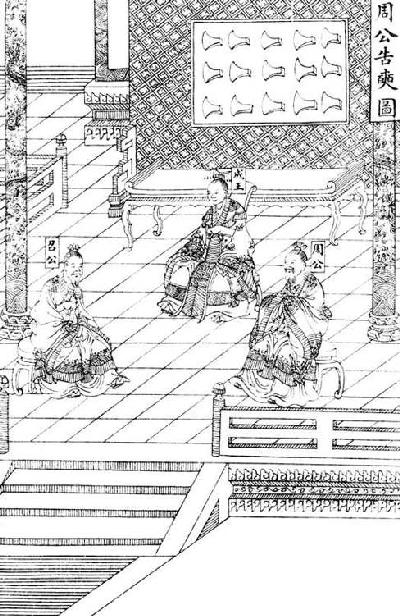

卷三十一 吴太伯世家第一
吴太伯，太伯弟仲雍，皆周太王之子，而王季历【季历：周文王之父。】 之兄也。季历贤，而有圣子昌，太王欲立季历以及昌，于是太伯、仲雍二人乃奔荆蛮，文【文：通“纹”。】 身断发，示不可用，以避季历。季历果立，是为王季，而昌为文王。太伯之奔荆蛮，自号句吴。荆蛮义之，从而归之千余家，立为吴太伯。
太伯卒，无子，弟仲雍立，是为吴仲雍。仲雍卒，子季简立。季简卒，子叔达立。叔达卒，子周章立。是时周武王克殷，求太伯、仲雍之后，得周章。周章已君吴，因而封之。乃封周章弟虞仲于周之北故夏虚，是为虞仲，列为诸侯。
周章卒，子熊遂立。熊遂卒，子柯相立。柯相卒，子强鸠夷立。强鸠夷卒，子余桥疑吾立。余桥疑吾卒，子柯卢立。柯卢卒，子周繇立。周繇卒，子屈羽立。屈羽卒，子夷吾立。夷吾卒，子禽处立。禽处卒，子转立。转卒，子颇高立。颇高卒，子句卑立。是时晋献公灭周北虞公，以开晋伐虢也。句卑卒，子去齐立。去齐卒，子寿梦立。寿梦立而吴始益大，称王。
自太伯作【作：创立。】 吴，五世而武王克殷，封其后为二：其一虞，在中国；其一吴，在夷蛮。十二世而晋灭中国之虞。中国之虞灭二世，而夷蛮之吴兴。大凡从太伯至寿梦十九世。
吴太伯和太伯的弟弟仲雍，都是周太王古公亶父的儿子，周王季历的哥哥。季历很贤明，有个有圣德之名的儿子昌，太王想要立季历为王，将来再传位给姬昌，于是太伯、仲雍二人便去了荆蛮之地，在身上刺上花纹，剪短自己的头发，表示自己已经不能继承王位，以此来避让季历。季历果然被立为王，就是王季，后来姬昌成为文王。太伯到了荆蛮之地，自称句吴。荆蛮之地的人认为他很仁义，所以有一千多家归附他，拥立他做了吴太伯。
苏辙：“季子事吴九十余年，观其挂剑于墓，不以死倍其心，葬子赢博，不以恩累其志，引兵避楚，不以名害其德，盖其所以养之者至矣，虽禄之天下将不受，况吴乎？彼其所养者诚重也。”王世贞：“季札智人也，余眜卒而犹让，彼见僚以贪愎躁勇之性，光以狡悍忍妒之资，未尝一日忘王位也。札欲以礼息争，而不能以义割恩，而不忍，故熟计而舍之，非得已也。”
太伯去世，没有儿子，他的弟弟仲雍继位，就是吴仲雍。仲雍去世，他的儿子季简继位。季简去世后，他的儿子叔达继位。叔达去世后，他的儿子周章继位。这时周武王灭掉殷商，寻找太伯、仲雍的后代，找到周章。周章这时已经是吴国的君主了，于是周武王就正式将吴地封给他。又将周章的弟弟虞仲封在周室北边夏都的旧址，就是虞仲，位于诸侯的行列。
周章去世，他的儿子熊遂继位。熊遂去世，他的儿子柯相继位。柯相去世，他的儿子强鸠夷继位。强鸠夷去世，他的儿子余桥疑吾继位。余桥疑吾去世，他的儿子柯卢继位。柯卢去世，他的儿子周繇继位。周繇去世，他的儿子屈羽继位。屈羽去世，他的儿子夷吾继位。夷吾去世，他的儿子禽处继位。禽处去世，他的儿子转继位。转去世，他的儿子颇高继位。颇高去世，他的儿子句卑继位。这时候晋献公灭掉了周室北边的虞公，因为虞公借道给晋国，让晋军灭掉了虢国。句卑去世，他的儿子去齐继位。去齐去世，他的儿子寿梦继位。寿梦继位以后吴国开始强大，寿梦以王自称。
自从太伯创建吴国，传了五代时周武王灭掉殷商，封太伯的后代为两个诸侯国：一个是虞国，在中原地区；一个是吴国，在蛮夷地区。传到十二代的时候，晋国将中原的虞国灭掉。中原的虞国被灭以后又过了两代，蛮夷地区的吴国开始强盛。总之，从太伯到寿梦一共传了十九代。
王寿梦二年，楚之亡大夫申公巫臣怨楚将子反而奔晋，自晋使吴，教吴用兵乘车，令其子为吴行人，吴于是始通于中国。吴伐楚。十六年，楚共王【楚共王：名审，楚庄王之子。】 伐吴，至衡山。
二十五年，王寿梦卒。寿梦有子四人，长曰诸樊，次曰余祭，次曰余眜，次曰季札。季札贤，而寿梦欲立之，季札让不可，于是乃立长子诸樊，摄行事当国。
王诸樊元年，诸樊已除丧，让位季札。季札谢曰：“曹宣公之卒也，诸侯与曹人不义曹君，将立子臧，子臧去之，以成曹君，君子曰‘能守节矣’。君义嗣，谁敢干君！有国，非吾节也。札虽不材，愿附于子臧之义。”吴人固立季札，季札弃其室而耕，乃舍之。秋，吴伐楚，楚败我师。四年，晋平公初立。
十三年，王诸樊卒。有命授弟余祭，欲传以次，必致国于季札而止，以称先王寿梦之意，且嘉季札之义，兄弟皆欲致国，令以渐至焉。季札封于延陵，故号曰延陵季子。
王余祭三年，齐相庆封有罪，自齐来奔吴。吴予庆封朱方之县，以为奉邑【奉邑：即俸邑，采邑。】 ，以女妻之，富于在齐。
吴王寿梦二年（前584年），逃亡在外的楚国大夫申公巫臣因为怨恨楚国的将领子反而投奔了晋国，他从晋国出使到了吴国，教给吴国人用兵和驾战车的方法，又让他的儿子狐庸担任吴国主管接待国宾的行人官，吴国于是开始和中原各国交往。后来，吴国讨伐楚国。十六年，楚共王讨伐吴国，兵至衡山。
二十五年（前561年），吴王寿梦去世。寿梦有四个儿子，长子名叫诸樊，次子名叫余祭，三子叫余眜，四子名叫季札。季札贤能，寿梦想立他为嗣子，但是季札谦逊不受，于是寿梦就立了长子诸樊为嗣，代理国家政务。
吴王诸樊元年（前560年），诸樊服丧期满后除去丧服，要将王位让给季札。季札推辞说：“曹宣公去世的时候，诸侯和曹国人都认为新曹君曹成公、曹宣公的弟弟负刍杀太子夺位是不义的行为，准备拥立子臧为曹君，子臧却逃走了，好成全负刍，君子称赞子臧‘能够严守节操’。你是合法的继承人，谁敢干涉你？做国君不符合我这种操行的人的意愿。我季札虽然没什么才能，但是我甘愿仿效子臧的节操。”吴国人坚决要立季札，于是季札离开了王室，像百姓一样耕地为业，吴国人只好放弃拥立他。秋季，吴国讨伐楚国，被楚军打败。四年（前557年），晋平公继位。
十三年（前548年），吴王诸樊去世，他留下遗言将王位传给弟弟余祭，希望这样依次往下传，一定要将传王位给季札才算完结，好实现父王寿梦的心愿，他还称赞季札让位的节操，希望自己的兄弟都能这样将王位依次相传，以使君位逐渐传到季札手中。季札被封在延陵，所以号为延陵季子。
吴王余祭三年（前545年），齐相庆封犯了罪，从齐国逃到吴国。吴王将朱方县封给庆封作为他的俸邑，将宗室的女儿嫁给他为妻，让他比在齐国时更富有。
四年，吴使季札聘【聘：访问。】 于鲁，请观周乐。为歌《周南》《召南》。曰：“美哉，始基之矣，犹未也，然勤而不怨。”歌《邶》《鄘》《卫》。曰：“美哉，渊乎，忧而不困者也。吾闻卫康叔【卫康叔：姬姓，名封，周武王同母弟，卫国第一任国君。】 、武公【武公：卫武公，姬姓，名和，卫厘侯之子，卫国第十一任国君。】 之德如是，是其《卫风》乎？”歌《王》。曰：“美哉，思而不惧，其周之东乎？”歌《郑》。曰：“其细已甚，民不堪也，是其先亡乎？”歌《齐》。曰：“美哉，泱泱乎大风也哉。表东海者，其太公乎？国未可量也。”歌《豳bīn》。曰：“美哉，荡荡乎，乐而不淫，其周公之东乎？”歌《秦》。曰：“此之谓夏声。夫能夏则大，大之至也，其周之旧乎？”歌《魏》。曰：“美哉，沨沨【沨沨：舒缓平和的样子。】 乎，大而宽，俭而易，行以德辅，此则盟主也。”歌《唐》。曰：“思深哉，其有陶唐氏之遗风乎？不然，何忧之远也？非令德之后，谁能若是！”歌《陈》。曰：“国无主，其能久乎？”自《郐》以下，无讥焉。歌《小雅》。曰：“美哉，思而不贰，怨而不言，其周德之衰乎？犹有先王之遗民也。”歌《大雅》。曰：“广哉，熙熙乎，曲而有直体，其文王之德乎？”歌《颂》。曰：“至矣哉，直而不倨，曲而不诎，近而不逼，远而不携，迁而不淫，复而不厌，哀而不愁，乐而不荒，用而不匮，广而不宣，施而不费，取而不贪，处而不底，行而不流。五声和，八风平，节有度，守有序，盛德之所同也。”见舞《象箾shuò》《南籥》者，曰：“美哉，犹有感。”见舞《大武》，曰：“美哉，周之盛也其若此乎？”见舞《韶护》者，曰：“圣人之弘也，犹有惭德，圣人之难也！”见舞《大夏》，曰：“美哉，勤而不德！非禹其谁能及之？”见舞《招箾》，曰：“德至矣哉，大矣，如天之无不焘【焘：覆盖。】 也，如地之无不载也，虽甚盛德，无以加矣。观止矣，若有他乐，吾不敢观。”
四年（前544年），吴王派季札出访鲁国，季札请求观赏鲁国保留的周室礼乐。鲁国的乐师为季札演唱《周南》《召南》。季札说：“歌曲真优美啊，起始处奠定了坚实的基础，但是仍然没有达到完美的程度，然而却唱出了百姓勤劳于王事而没有怨言的感情。”乐师又演唱了《邶风》《鄘风》《卫风》。季札说：“歌曲真优美啊，曲调深沉，具有忧患意识又不使人困惑。我听说卫康叔、武公的德行就是这样的，这大概就是《卫风》吧？”乐师又演唱了《王风》。季札说：“歌曲真优美啊，深思却没有惧意，这大概是周王室东迁之后的乐曲吧？”乐师又演唱了《郑风》。季札说：“这首曲子的情调过于细弱，反映了百姓不堪忍受烦琐的政令，这大概是郑国要灭亡的先兆吧？”乐师演唱了《齐风》。季札说道：“乐曲真美好啊，气势恢宏有大国的风度。像那宽阔的东海一样，这大概是姜太公的遗风吧？这个国家的前途不可限量啊。”乐师演唱了《豳风》。季札说：“歌曲真优美啊，气势宽宏浩荡，欢快而又不过度，这大概是反映周公东征的乐曲吧？”乐师演唱了《秦风》。季札说：“这就是所谓的华夏的声音。能够追慕华夏就会弘大，是弘大的极致，这大概是周王室旧地的乐曲吧？”乐师演唱了《魏风》。季札说：“乐曲真美好啊，乐声婉转悠扬，气势弘大宽广，节约而易行，再以德教为辅佐，可以做盟主了。”乐师演唱了《唐风》。季札说：“思虑深远啊，这有陶唐氏的遗风吧？不然，为何忧患意识如此沉重呢？如果不是具备盛德的先王之后，谁能如此！”乐师又演唱了《陈风》。季札说：“一个国家没有贤明的君主，还能长远吗？”接下来乐师演唱的是《郐风》，从这以下，季札就再没有给出评论。乐师演唱了《小雅》。季札说：“乐曲真优美啊，有忧患意识而没有二心，心存怨恨但是没有说出，这可能就是周德衰微的表现吧？但是还有些先王遗民风俗的留存啊。”乐师又演唱了《大雅》。季札说：“这首乐曲真是宽广弘大啊，融洽和乐，婉转柔缓而又有正直刚强之处，这反映的可能就是周文王的大德吧？”乐师又演唱了《颂》。季札说：“优美至极啊，曲调刚劲而不傲慢，婉转而不卑屈，紧密却不紧迫，舒缓但不散漫，节奏多变又不混乱，曲调反复而不厌烦，哀伤而不忧愁，欢快而不荒谬，广用智慧而不匮乏，宽宏而不张扬，施惠但不浪费，求取但不贪婪，乐停而余音仍在回荡，音变动而不随波逐流。五声和诣，八音协调，节奏遵循法度，旋律符合规则，与盛德之人一样。”季札又观赏了《象箾》《南籥》舞，然后说：“舞蹈真优美啊，但是还有少许遣憾之处。”季札又观赏了《大武》舞，说：“舞蹈真美妙啊，周朝的盛德大概就是如此吧？”他又观赏了《韶护》舞，说：“圣人那么伟大，还为自己的德行感到惭愧，可见成为圣人实在很难呀！”季札又观赏了《大夏》舞，说：“舞蹈真美妙啊，勤劳于民事而不居功自傲！除了大禹还有谁能做到？”他又观赏了《招箾》舞，说道：“美德修行至此可以说是极点了，真是太伟大了，就像上天一样没有覆盖不到的地方，就像大地一样没有承载不到之物，盛德已经达到极点，再无以复加了。观赏礼乐心满意足了，即使有其他礼乐，我也不敢再要求观赏了。”
去鲁，遂使齐。说晏平仲【晏平仲：晏婴，字平仲，春秋时期齐国政治家。】 曰：“子速纳邑与政。无邑无政，乃免于难。齐国之政将有所归，未得所归，难未息也。”故晏子因陈桓子以纳政与邑，是以免于栾高之难。
去齐，使于郑。见子产，如旧交。谓子产曰：“郑之执政侈，难将至矣，政必及子。子为政，慎以礼。不然，郑国将败。”去郑，适卫。说蘧qú瑗、史狗、史鳅、公子荆、公叔发、公子朝曰：“卫多君子，未有患也。”
自卫如晋，将舍于宿，闻钟声，曰：“异哉！吾闻之，辩而不德，必加于戮。夫子获罪于君以在此，惧犹不足，而又可以畔乎？夫子【夫子：指孙林父。】 之在此，犹燕之巢于幕也。君在殡而可以乐乎？”遂去之。文子闻之，终身不听琴瑟。
适晋，说赵文子、韩宣子、魏献子曰：“晋国其萃于三家乎！”将去，谓叔向【叔向：姓羊舌，名肸，晋国大夫。】 曰：“吾子勉之！君侈而多良，大夫皆富，政将在三家。吾子直，必思自免于难。”
季札之初使，北过徐君。徐君好季札剑，口弗敢言。季札心知之，为使上国，未献。还至徐，徐君已死，于是乃解其宝剑，系之徐君冢树而去。从者曰：“徐君已死，尚谁予乎？”季子曰：“不然。始吾心已许之，岂以死倍吾心哉！”
七年，楚公子围弑其王夹敖而代立，是为灵王。十年，楚灵王会诸侯而以伐吴之朱方，以诛齐庆封。吴亦攻楚，取三邑而去。十一年，楚伐吴，至雩娄。十二年，楚复来伐，次于干谿，楚师败走。
十七年，王余祭卒，弟余眜立。王余眜二年，楚公子弃疾弑其君灵王代立焉。
四年，王余眜卒，欲授弟季札。季札让，逃去。于是吴人曰：“先王有命，兄卒弟代立，必致季子。季子今逃位，则王余眜后立。今卒，其子当代。”乃立王余眜之子僚为王。
季札离开鲁国，又出使到齐国。他劝晏平仲说：“您赶快交出封地和权力。没有了封地和政权，才能免除灾难。齐国的政权将要易手，在不能确定归入谁手之时，灾难是不会停止的。”因此晏子通过陈桓子将自己的封地和权力都交了出去，所以他才在栾施、高强两大豪门的权力斗争中幸免于难。
季札离开齐国，出使到郑国。他见到子产，就像见到老朋友一样。他对子产说：“郑国的执政者荒淫奢侈，灾难即将到来，政权一定会落入您的手中。一旦您主政，要谨慎地以礼治国。否则郑国就会衰败。”季札离开郑国，前往卫国，他对蘧援、史狗、史鳅、公子荆、公叔发、公子朝说道：“卫国有很多的君子，没有祸患。”
季札从卫国前往晋国，准备在宿地住下时听到了钟声，他说道：“真奇怪啊！我听说，有辩才却不修德行，一定会招来杀身之祸。孙林父得罪了君王还住在这里，害怕还来不及，怎么还在敲钟奏乐？孙林父住在这里，就好像燕子在幕布上筑巢一样非常危险。君王还没有安葬，可以敲钟奏乐吗？”于是离开这里，孙林父听到了季札的话，一直到去世都没有再听过奏乐。
季札前往晋国，对赵文子、韩宣子、魏献子说：“晋国的国政将要落到你们三家手中了吧！”他将要离开晋国，对叔向说道：“您一定要努力啊！晋国国君奢侈无度但是还有很多良臣，大夫们都很富有，政权将落到那三家手中。您为人正直，一定要想办法让自己免遭祸患。”
季札刚从吴国出来出使的时候，北上的途中曾经去拜访徐国的国君。徐君很喜欢季札的宝剑，但是口中没敢说出来。季札心里知道了，但是因为出使中原各国要用到宝剑，所以就没有将宝剑献给徐君。返回时又到了徐国，徐君已经去世了，季札于是便解下宝剑，挂在徐君墓旁的树上后转身而去。随行的人说道：“徐君已经去世了，宝剑还给谁呢？”季札说道：“不对。当初我已经在心里想好了要将宝剑送给他，怎么能因他已经去世就违背我的心意呢！”
七年（前541年），楚国公子围杀死楚王夹敖自立为王，就是楚灵王。十年（前538年），楚灵王会盟诸侯攻打吴国的朱方县，想要杀掉齐国原来的相国庆封。吴国也出兵攻打楚国，攻取了楚国的三座城池后撤退。十一年（前537年），楚国出兵讨伐吴国，一直打到雩娄。十二年（前536年），楚国又一次讨伐吴国，在干谿驻军，后来战败撤走。
十七年（前531年），吴王余祭去世，他的弟弟余眜继位。吴王余眜二年（公元前529年），楚国公子弃疾杀死楚灵王，自立为楚王。
四年（前527年），吴王余眜去世，想将王位传给弟弟季札。季札推让并逃走。于是吴国人说：“先王有遗命，哥哥去世由弟弟继位，一定要将王位传给季子。季子如今逃走不接受王位，那么余眜就是兄弟中最后一个继位的君王。如今他去世了，他的儿子应当继立。”于是余眜的儿子僚便被立为吴王。
王僚二年，公子光伐楚，败而亡王舟【王舟：吴国先王所乘之舟，名余皇。】 。光惧，袭楚，复得王舟而还。
五年，楚之亡臣伍子胥来奔，公子光客之。公子光者，王诸樊之子也。常以为吾父兄弟四人，当传至季子。季子即不受国，光父先立。即不传季子，光当立。阴纳贤士，欲以袭王僚。
八年，吴使公子光伐楚，败楚师，迎楚故太子建母于居巢以归。因北伐，败陈、蔡之师。九年，公子光伐楚，拔居巢、钟离。初，楚边邑卑梁氏之处女与吴边邑之女争桑，二女家怒相灭，两国边邑长闻之，怒而相攻，灭吴之边邑。吴王怒，故遂伐楚，取两都而去。
伍子胥之初奔吴，说吴王僚以伐楚之利。公子光曰：“胥之父兄为僇于楚，欲自报其仇耳。未见其利。”于是伍员知光有他志，乃求勇士专诸，是之光。光喜，乃客伍子胥。子胥退而耕于野，以待专诸之事。
十二年冬，楚平王卒。十三年春，吴欲因楚丧而伐之，使公子盖余、烛庸以兵围楚之六、灊。使季札于晋，以观诸侯之变。楚发兵绝吴兵后，吴兵不得还。于是吴公子光曰：“此时不可失也。”告专诸曰：“不索何获！我真王嗣，当立，吾欲求之。季子虽至，不吾废也。”专诸曰：“王僚可杀也。母老子弱，而两公子将兵攻楚，楚绝其路。方今吴外困于楚，而内空无骨鲠之臣，是无柰我何。”光曰：“我身，子之身也。”四月丙子，光伏甲士于窟室，而谒【谒：请。】 王僚饮。王僚使兵陈于道，自王宫至光之家，门阶户席，皆王僚之亲也，人夹持铍【铍：两刃剑。】 。公子光详【详：通“佯”，假装。】 为足疾，入于窟室，使专诸置匕首于炙鱼之中以进食。手匕首刺王僚，铍交于匈【匈：同“胸”。】 ，遂弑王僚。公子光竟代立为王，是为吴王阖hé庐。阖庐乃以专诸子为卿。
吴王僚二年（前525年），公子光讨伐楚国，打了败仗并丢失了先王的座船。他非常害怕，偷袭楚军，夺回先王的座船后回到吴国。
五年（前522年），楚国逃亡在外的大臣伍子胥来到吴国，公子光以宾客之礼节接待他。公子光是吴王诸樊的儿子。他一直认为：我的父辈兄弟四人，王位应当传给季子。季子既然不接受国家，我的父亲又是最先继位为王的。既然不传给季子，就应当由我继承王位。所以他在暗中招纳贤士，想要袭杀王僚。
八年（前519年），吴国派公子光攻打楚国，战胜楚军，将楚国前太子建的母亲从居巢接回吴国。随后乘胜北伐，打败陈国、蔡国的军队。九年（前518年），公子光讨伐楚国，攻占了居巢、钟离。起初，楚国边城上一位卑梁氏的少女和吴国边城的妇女因为采桑之事而发生争执，两位女子的家人都很气愤，互相攻击杀戮，两国边城的长官听说了这件事，因气愤而互相攻打，吴国的边城被灭掉。吴王知道以后勃然大怒，便出兵攻打楚国，占领了居巢、钟离这两座城邑后撤退。
伍子胥刚到吴国的时候，向吴王僚陈述进攻楚国的好处。公子光说道：“伍子胥的父亲兄长被楚王所害，他是想为自己报私仇而已。我没有看到攻打楚国对吴国有什么好处。”于是伍子胥看出公子光心怀异志，便找到了一位名叫专诸的勇士并引荐他见公子光。公子光很高兴，对伍子胥以礼相待。伍子胥退隐退到乡间耕作，等待专诸采取行动。
十二年（前515年）冬季，楚平王去世。十三年（前514年）春季，吴国想趁楚国国丧的机会攻打楚国，于是便派公子盖余、烛庸率军围攻楚国的六、灊。又派季札前往晋国，观察诸侯国的反应。楚国发兵截断吴军后路，吴军无法撤军。于是吴国公子光说：“这个机会不可错过啊。”他对专诸说：“不动手什么都得不到！我才是真正的王位继承人，应当继位，我要夺回王位。即便季子回来了，也不能废掉我。”专诸说：“可以杀掉王僚。现在在国内只有他的老母幼子，两公子率领军队攻打楚国，楚军已经截断了他们的后路。如今吴国在外正被楚军围困，在内又没有刚直忠正的臣子，没有谁能阻挡我们了。”公子光说道：“我的身体，就是你的身体，我们福祸与共。”四月丙子日，公子光在自己家中的地下室埋伏了士兵，邀请王僚前来饮酒。王僚让士兵排列在沿途的路旁，从王宫到公子光的家，外门、台阶、内门、座位，都有王僚的亲兵，各个人都手持利刃。公子光假装脚疼，躲进了地下室，命专诸将匕首藏在烤鱼的腹中，再将鱼送给王僚。专诸用手抽出匕首刺向王僚，尽管他被王僚的亲兵刺中了胸膛，还是杀死了王僚。公子光最终自立为王，就是吴王阖庐。阖庐任命专诸的儿子做了卿。
季子至，曰：“苟先君无废祀，民人无废主，社稷有奉，乃吾君也。吾敢谁怨乎？哀死事生，以待天命。非我生乱，立者从之，先人之道也。”复命，哭僚墓，复位而待。吴公子烛庸、盖余二人将兵遇围于楚者，闻公子光弑王僚自立，乃以其兵降楚，楚封之于舒。
王阖庐元年，举伍子胥为行人而与谋国事。楚诛伯州犁，其孙伯嚭pǐ亡奔吴，吴以为大夫。
三年，吴王阖庐与子胥、伯嚭将兵伐楚，拔舒，杀吴亡将二公子。光谋欲入郢，将军孙武曰：“民劳，未可，待之。”四年，伐楚，取六与灊。五年，伐越，败之。六年，楚使子常囊瓦伐吴。迎而击之，大败楚军于豫章，取楚之居巢而还。
九年，吴王阖庐请伍子胥、孙武曰：“始子之言郢未可入，今果如何？”二子对曰：“楚将子常贪，而唐、蔡皆怨之。王必欲大伐，必得唐、蔡乃可。”阖庐从之，悉兴师，与唐、蔡西伐楚，至于汉水。楚亦发兵拒吴，夹水陈。吴王阖庐弟夫概gài欲战，阖庐弗许。夫概曰：“王已属【属：嘱托，托付。】 臣兵，兵以利为上，尚何待焉？”遂以其部五千人袭冒楚，楚兵大败，走。于是吴王遂纵兵追之。比【比：及，等到。】 至郢，五战，楚五败。楚昭王【楚昭王：名珍，楚平王之子。】 亡出郢，奔郧。郧公弟欲弑昭王，昭王与郧公奔随。而吴兵遂入郢。子胥、伯嚭鞭平王之尸以报父雠。
十年春，越闻吴王之在郢，国空，乃伐吴。吴使别兵击越。楚告急秦，秦遣兵救楚击吴，吴师败。阖庐弟夫概见秦越交败吴，吴王留楚不去，夫概亡归吴而自立为吴王。阖庐闻之，乃引兵归，攻夫概。夫概败奔楚。楚昭王乃得以九月复入郢，而封夫概于堂谿，为堂谿氏。十一年，吴王使太子夫差伐楚，取番。楚恐而去郢徙鄀。
季子回到吴国，说道：“只要对先王的祭祀没有废绝，人民不会没有君主，社稷的神得到供奉，那么他就是我的君王。我还敢责怪谁呢？我只有哀悼死去的，侍奉活着的，以等待天命的安排。祸乱并非由我而生，谁被立为君王我就顺从谁，这是先人的原则啊。”季子去了王僚的墓，报告自己出使晋国的经过，又哭祭一番，然后回到自己的岗位等待阖庐安排。被楚军包围的吴公子烛庸、盖余两人，听说公子光杀了王僚自立为王，就率军投降了楚国，楚国将舒地封给他们。
吴王阖庐元年（前514年），提拔伍子胥担任行人官，和他谋划国家大事。楚国杀了伯州犁，伯州犁的孙子伯嚭逃到了吴国，吴国任命他为大夫。
三年（前512年），吴王阖庐和伍子胥、伯嚭率军进攻楚国，攻克舒邑，杀死吴国的亡将烛庸、盖余两公子。吴王想趁机攻入郢都，将军孙武说道：“现在百姓过于疲劳，不可进军，还是等待机会吧。”四年（前511年），讨伐楚国，攻占了六、灊两座城池。五年（前510年），讨伐越国，打败了越军。六年（前509年），楚国派子常率军攻打吴国。吴国出兵迎战，在豫章大败楚军，夺取了楚国的居巢后回国。
九年（前506年），吴王阖庐恭敬地问伍子胥、孙武道：“当初你们说郢都不可以进入，如今如何？”两人回答道：“楚国将领子常贪婪，唐国、蔡国都很怨恨他。如果君王一定要大举攻打，那就一定要得到唐国、蔡国的援助才可以。”阖庐采纳了他们的意见，出动吴国所有的军队，与唐国、蔡国的军队一起向西攻打楚国，到达汉水的边上。楚国也派出军队阻击吴军，两军隔着汉水列阵。吴王阖庐的弟弟夫概想要作战，阖庐不同意。夫概说：“现在君王已经将军队交由我指挥，用兵以抓住战机为上策，不动手还等什么呢？”于是，夫概率领他的部下五千人突袭楚军，楚军大败而逃。于是吴王纵兵追击。一直追到郢都，两军五次交战，楚军五次被打败。楚昭王逃离郢都，逃奔郧县。郧公的弟弟想要杀死昭王，昭王和郧公便逃到了随国。吴军于是进入郢都。伍子胥、伯嚭用鞭子抽打楚平王的尸体以报其杀父之仇。
十年（前505年）春季，越王听说吴王阖庐在楚国的郢都，国内空虚，于是讨伐吴国。吴国派另外一支军队抗击越军。楚国向秦国告急，秦国派兵救援楚国，攻打吴军，吴军被打败。阖庐的弟弟夫概见秦军、越军先后打败吴军，吴王还留在楚国不回吴国，便逃回吴国自立为吴王。阖庐知道以后，这才率军回国，攻打夫概。夫概战败后逃奔楚国。楚昭王这才得以在九月回到了郢都，将夫概封在堂谿，称为堂谿氏。十一年（前504年），吴王阖庐派太子夫差讨伐楚国，攻取了番邑。楚国恐惧，就将国都从郢迁到了鄀。
十五年，孔子相鲁。
十九年夏，吴伐越，越王句践迎击之槜李。越使死士挑战，三行造吴师，呼，自刭。吴师观之，越因伐吴，败之姑苏，伤吴王阖庐指【指：这里指“脚趾”。】 ，军却七里。吴王病伤而死，阖庐使立太子夫差，谓曰：“尔而忘句践杀汝父乎？”对曰：“不敢！”三年，乃报越。
王夫差元年，以大夫伯嚭为太宰。习战射，常以报越为志。二年，吴王悉精兵以伐越，败之夫椒，报姑苏也。越王句践乃以甲兵五千人栖于会稽，使大夫种【大夫仲：即文种，春秋时期谋略家。】 因吴太宰嚭而行成，请委国为臣妾。吴王将许之，伍子胥谏曰：“昔有过氏杀斟灌以伐斟寻，灭夏后帝相。帝相之妃后缗方娠，逃于有仍而生少康。少康为有仍牧正。有过又欲杀少康，少康奔有虞。有虞思夏德，于是妻之以二女而邑之于纶，有田一成，有众一旅。后遂收夏众，抚其官职。使人诱之，遂灭有过氏，复禹之绩，祀夏配天，不失旧物。今吴不如有过之强，而句践大于少康。今不因此而灭之，又将宽之，不亦难乎！且句践为人能辛苦，今不灭，后必悔之。”吴王不听，听太宰嚭，卒许越平，与盟而罢兵去。
十五年（前500年），孔子在鲁定公与齐景公于夹谷相会时担任傧相。
十九年（前496年）夏季，吴国派兵攻打越国，越王句践在槜李迎战吴军。越王派出敢死队向吴军挑战，敢死队排成三行冲向吴军，他们高声呼喊着，最后全都自刎而死。吴军士兵争相观看，越军抓住这个机会，在姑苏打败了吴军，伤到了吴王阖庐的脚趾，吴军后退七里。后来吴王阖庐创伤发作而死，他遗命立太子夫差为王，对夫差说：“你能忘了句践杀死你父亲的事吗？”夫差回答道：“不敢！”三年以后，夫差报复了越国。
吴王夫差元年（前495年），任命大夫伯嚭为太宰。吴王坚持训练军队，始终以向越国报仇为志。二年（前494年），吴王夫差派出吴国所有的精兵攻打越国，在夫椒战胜越军，报了姑苏战败的仇。越王句践带领五千士兵退守会稽，派大夫文种通过吴国的太宰伯嚭向吴国求和，越国愿意整个国家都做吴国的奴仆。吴王夫差准备同意，伍子胥进谏说：“从前有过氏杀了斟灌后又去进攻斟寻，灭掉了夏的君王帝相。帝相的妃子后缗当时有孕在身，逃到了有仍国，生下了少康。后来少康做了有仍的牧正官。有过氏又想杀掉少康，少康又逃到了有虞国。有虞氏念及夏的恩德，就将自己的两个女儿嫁给少康，又将他封在纶邑，辖有方圆十里的土地，拥有五百名部下。后来，少康招纳夏的遗民，整顿官制。又派人打入有过氏内部对其进行引诱，终于灭掉了有过氏，再现了夏禹的功绩，祭祀时以夏祖配享上天，没有失去夏原有的河山。现在吴国不如有过氏强盛，但是句践的势力却比少康强大。如果现在不趁这个机会灭掉他，却要宽容他，这是为将来埋下祸患！况且句践这个人能够忍受艰辛苦难，如今不灭掉他，以后肯定会后悔。”吴王不肯听从，只听信太宰伯嚭的话，最终答应了越国的求和，与越国签订盟约后撤兵回国。
七年，吴王夫差闻齐景公死而大臣争宠，新君弱，乃兴师北伐齐。子胥谏曰：“越王句践食不重味，衣不重采，吊死问疾，且欲有所用其众。此人不死，必为吴患。今越在腹心疾而王不先，而务齐，不亦谬乎！”吴王不听，遂北伐齐，败齐师于艾陵。至缯，召鲁哀公而征百牢。季康子使子贡以周礼说太宰嚭，乃得止。因留略地【略地：开拓领地。】 于齐鲁之南。九年，为驺伐鲁，至，与鲁盟乃去。十年，因伐齐而归。十一年，复北伐齐。
越王句践率其众以朝吴，厚献遗之，吴王喜。唯子胥惧，曰：“是弃吴也。”谏曰：“越在腹心，今得志于齐，犹石田，无所用。且《盘庚之诰》有‘颠越勿遗，商之以兴’。”吴王不听，使子胥于齐，子胥属其子于齐鲍氏，还报吴王。吴王闻之，大怒，赐子胥属镂之剑以死。将死，曰：“树吾墓上以梓，令可为器。抉吾眼置之吴东门，以观越之灭吴也。”
齐鲍氏弑齐悼公。吴王闻之，哭于军门外三日，乃从海上攻齐。齐人败吴，吴王乃引兵归。
十三年，吴召鲁、卫之君会于橐皋。
七年（前489年），吴王夫差听说齐景公去世而大臣们争权，新立的国君幼小势弱，于是出兵北上征讨齐国。伍子胥劝谏他说：“越王句践吃饭时不会有第二道菜肴，穿的衣服不会有两种颜色，吊唁死去的人，慰问生病的人，他这是想使用他的民众。这个人不死，将来一定会成为吴国的祸患。如今越国是我们的心腹大患，君王不先除掉越国，反倒去讨伐齐国，不是很荒谬吗！”吴王没有听从伍子胥的劝告，于是北上进攻齐国，在艾陵打败了齐军。到了缯邑，召见鲁哀公，要求鲁国以百牢之礼招待吴王夫差。季康子派子贡列举周礼劝说太宰伯嚭，吴国这才不再要求。吴王就此留下来略取齐国、鲁国两国南部的土地。九年（前487年），吴王又为了驺国征讨鲁国，抵达鲁国后，和鲁国订了盟约才撤兵而去。十年（前486年），趁势征讨齐国后班师回国。十一年（前485年），再次北上征讨齐国。
越王句践率领部下朝见吴王，奉上丰厚的礼物，吴王非常高兴。只有伍子胥忧心忡忡，他说道：“吴国这是要被丢弃了啊。”他劝谏吴王道：“越国近在腹心，现在我国在齐国大获成功，但是好像得到了一块石头田地，没什么用途。况且《盘庚之诰》中有‘对于悖逆的坏家伙一定要斩草除根，才有商朝的兴旺’的话。”吴王并不听从他的劝告，派伍子胥出使齐国，伍子胥将自己的儿子托付给齐国的大夫鲍氏，然后回国向吴王报告出使的情况。吴王听说他的做法后大怒，赐给伍子胥属镂宝剑命其自杀。伍子胥在死之前说道：“在我的墓上种上梓树，长大后让它可以做棺材。将我的眼睛挖出来放在吴国的东城门之上，让我看着越国灭掉吴国。”
后来齐国的大夫鲍氏杀死齐悼公。吴王知道后，在军门外痛哭三天，便率军从海上进攻齐国。齐军打败吴军，吴王只好引败兵回国。
十三年（前483年），吴王征召鲁国、卫国的君王在橐皋会盟。
十四年春，吴王北会诸侯于黄池，欲霸中国以全周室。六月丙子，越王句践伐吴。乙酉，越五千人与吴战。丙戌，虏吴太子友。丁亥，入吴。吴人告败于王夫差，夫差恶其闻也。或泄其语，吴王怒，斩七人于幕下。七月辛丑，吴王与晋定公【晋定公：名午，晋顷公之子。】 争长。吴王曰：“于周室我为长。”晋定公曰：“于姬姓我为伯。”赵鞅怒，将伐吴，乃长晋定公。吴王已盟，与晋别，欲伐宋。太宰嚭曰：“可胜而不能居也。”乃引兵归国。国亡太子，内空，王居外久，士皆罢【罢：通“疲”。】 敝，于是乃使厚币以与越平。
十五年，齐田常杀简公。
十八年，越益强。越王句践率兵复伐败吴师于笠泽。楚灭陈。
二十年，越王句践复伐吴。二十一年，遂围吴。二十三年十一月丁卯，越败吴。越王句践欲迁吴王夫差于甬东，予百家居之。吴王曰：“孤老矣，不能事君王也。吾悔不用子胥之言，自令陷此。”遂自刭死。越王灭吴，诛太宰嚭，以为不忠，而归。
十四年（前482年）春季，吴王北上在黄池会盟诸侯，想要称霸中原从而保全周室。六月丙子日，越王句践攻打吴国。乙酉日，五千越军和吴军交战。丙戌日，越军俘获吴国的太子友。丁亥日，越军进入吴国境内。吴国人将战败的消息上报给吴王夫差，夫差不想让诸侯听说这个坏消息。但有人泄漏了消息，吴王大怒，在军营幕下杀了七个人。七月辛丑日，吴王和晋定公争夺盟主。吴王说道：“在周王室宗族当中，我祖先的辈份最长。”晋定公说：“姬姓诸侯当中，晋国从文公以来长期居于霸主之位。”晋国的赵鞅非常生气，要出兵讨伐吴国，这才让晋定公作了盟主。吴王和诸侯签订盟约以后，和晋定公告别，想要攻打宋国。太宰伯嚭说道：“即便打败了宋国，也无法将其占有。”吴王这才率领吴军回国。这时吴国太子被俘，国内空虚，吴王长年在外征战，士兵都已疲惫不堪，于是便派使者带上重金去和越国讲和。
十五年（前481年），齐国田常杀死了齐简公。
十八年（前478年），越国更加强大。越王句践率领军队再次进攻吴国，在笠泽打败了吴军。楚国灭掉了陈国。
二十年（前476年），越王句践再次进攻吴国。二十一年（前475年），越军包围了吴国的都城。二十三年（前473年）十一月丁卯日，越军打败了吴军。越王句践想把吴王夫差流放到甬东，给他一百户民家的地域让他居住。吴王说：“我已经老了，不能再侍奉君王了。我很后悔当初没有听伍子胥的话，让自己落到今天这个地步。”于是自杀而死。越王灭掉吴国，诛杀了太宰伯嚭，越王认为他不忠于国家，然后率领军队回到越国。
太史公曰：孔子言“太伯可谓至德矣，三以天下让，民无得而称焉”。余读《春秋》古文，乃知中国之虞与荆蛮句吴兄弟也。延陵季子之仁心，慕义无穷，见微而知清浊。呜呼，又何其闳览博物君子也！
太史公说：孔子说的“吴太伯可称得上德行完美啊，三次以天下相让，百姓都找不到赞美他的言词”。我读《春秋》古文，才知道中原的虞国和荆蛮的吴国原来是兄弟之邦啊。延陵季子的仁爱善心，仰慕道义追求终生，观察细微便知清浊。啊，又是一位多么见多识广、博学多知的君子啊！
卷三十二 齐太公世家第二
茅坤：“太史公叙太公始为阴谋处，兵家者言也，非是。”
太公望吕尚【太公望吕尚：姜姓，名尚，其祖先曾封于吕，故以吕为氏。】 者，东海上人。其先祖尝为四岳，佐禹平水土甚有功。虞夏之际封于吕，或封于申，姓姜氏。夏商之时，申、吕或封枝庶子孙，或为庶人，尚其后苗裔也。本姓姜氏，从其封姓，故曰吕尚。
吕尚盖尝穷困，年老矣，以渔钓奸【奸：通“干”，干谒，进见。】 周西伯。西伯将出猎，卜之，曰“所获非龙非彨【彨：通“螭”，无角的龙。】 ，非虎非罴，所获霸王之辅”。于是周西伯猎，果遇太公于渭之阳，与语大说，曰：“自吾先君太公曰‘当有圣人适周，周以兴’。子真是邪？吾太公望子久矣。”故号之曰“太公望”，载与俱归，立为师。
或曰：太公博闻，尝事纣。纣无道，去之。游说诸侯，无所遇，而卒西归周西伯。或曰，吕尚处士，隐海滨。周西伯拘羑里，散宜生、闳夭素知而招吕尚。吕尚亦曰“吾闻西伯贤，又善养老，盍往焉”。三人者为西伯求美女奇物，献之于纣，以赎西伯。西伯得以出，反国。言吕尚所以事周虽异，然要之为文武师。
周西伯昌之脱羑里归，与吕尚阴谋修德以倾商政，其事多兵权与奇计，故后世之言兵及周之阴权皆宗太公为本谋。周西伯政平，及断虞芮之讼，而诗人称西伯受命曰文王。伐崇、密须、犬夷，大作丰邑。天下三分，其二归周者，太公之谋计居多。
太公望吕尚是东海边上的人。他的先祖曾经是“四岳”之一，辅佐大禹治水，立下很大的功劳。虞舜、夏禹的时候被封在吕，还有的被封在申，姜姓。夏、商的时候，申、吕这两个地方有的被封给旁支的子孙，有的则成为平民，吕尚是他们的后代。姜尚本来姓姜，用他的封邑做姓氏，所以被称为吕尚。
吕尚曾经非常穷困，到了年老的时候，通过钓鱼求见周西伯侯昌。西伯当时准备外出打猎，临行前占卜，占卜的结果说：“所得到的不是龙不是螭，不是虎也不是熊，而是能够成就霸业的辅佐者。”于是西伯侯便外出打猎，果然在渭水北岸遇到了太公，和他交谈后非常高兴，说道：“早就听我国先君太公说‘会有圣人到周国来，周国会得以兴盛’。您就是这个人吧？我们的太公盼望您已经很久啦。”所以便称吕尚为“太公望”，和他一起乘车回去，尊为军师。
还有人说：太公博学多闻，曾经辅佐商纣王。因为纣王暴虐无道，太公就离开了。他到各国游说诸侯，但是一直没有遇到赏识他的人，最后向西归附周西伯侯。还有人说，吕尚是一个德才兼备却隐居而不仕的人，隐居在海边。周西伯侯被纣王囚禁在羑里，散宜生和闳夭原来就知道吕尚这个人，于是便请他出山。吕尚也这样说：“我听说西伯贤德，又尊重奉养老年人，何不到他那里去呢？”于是三人便替西伯搜罗美女和稀奇的宝物献给纣王，从而赎回西伯。西伯这才得以被释放，回到自己的国家。关于吕尚是如何归周的虽然有不一样的说法，然而核心都是说他成为了周文王、武王的师辅之臣。
周西伯昌从羑里脱身回国以后，与吕尚暗中谋划施行德政，以推翻商朝的统治，其中很多是用兵的权谋和奇计，所以后世之人论及用兵之道以及周暗中施用的权谋，都推崇太公是其中主要的策划者。周西伯侯昌执政公平，到他裁决了虞、芮两国的争端，诗人称西伯是承受天命的文王。文王征讨崇国、密须、犬夷，大规模地建设丰邑。当时的天下分成三部份，其中两部分都归为周国所有，这其中太公的谋略占了大部分。
文王崩，武王即位。九年，欲修文王业，东伐以观诸侯集否。师行，师尚父左杖黄钺，右把白旄以誓，曰：“苍兕sì苍兕，总尔众庶，与尔舟楫，后至者斩！”遂至盟津【盟津：亦名“孟津”，黄河渡口，在今河南省孟津县东。】 。诸侯不期而会者八百诸侯。诸侯皆曰：“纣可伐也。”武王曰：“未可。”还师，与太公作此《太誓》。
居二年，纣杀王子比干【比干：纣王的叔父。】 ，囚箕子【箕子：纣王的伯父。】 。武王将伐纣，卜龟兆，不吉，风雨暴至。群公尽惧，唯太公强之劝武王，武王于是遂行。十一年正月甲子，誓于牧野，伐商纣。纣师败绩。纣反走，登鹿台，遂追斩纣。明日，武王立于社，群公奉明水，卫康叔封布采席，师尚父牵牲，史佚策祝，以告神讨纣之罪。散鹿台之钱，发钜桥之粟，以振贫民。封比干墓，释箕子囚。迁九鼎，修周政，与天下更始。师尚父谋居多。
于是武王已平商而王天下，封师尚父于齐营丘。东就国，道宿行迟。逆旅之人曰：“吾闻时难得而易失。客寝甚安，殆非就国者也。”太公闻之，夜衣而行，犁明至国。莱侯来伐，与之争营丘。营丘边莱。莱人，夷也，会纣之乱而周初定，未能集远方，是以与太公争国。
大公至国，修政，因其俗，简其礼，通商工之业，便鱼盐之利，而人民多归齐，齐为大国。及周成王少时，管蔡作乱，淮夷畔周，乃使召康公命太公曰：“东至海，西至河，南至穆陵，北至无棣，五侯九伯，实得征之。”齐由此得征伐，为大国。都营丘。
文王去世后，武王继位。九年，武王要继续文王的事业，准备东征，以观察诸侯是否前来会合。军队临出发时，被尊为“师尚父”的吕尚左手拿着装饰着黄金的大斧，右手握着装饰着白牦牛尾的军旗誓师，他说道：“苍兕啊苍兕，集合你的民众，聚合船只，迟到者斩！”于是大军到了盟津，事先没有约定就主动前来的诸侯有八百家之多。诸侯都这样说：“可以征讨纣王了。”武王说道：“还不可以。”武王又率领军队回国，和太公一起写了《太誓》。
过了两年，纣王杀死王子比干，囚禁了箕子。武王准备征讨纣王，用龟甲占卜，卦象不吉利，这时又突然风雨大作。大臣们都很惊惧，只有太公坚决劝说武王就此出兵，武王于是率军出征。十一年正月甲子日，武王在牧野誓师，讨伐商纣。商纣的军队战败。纣王逃回朝歌，登上鹿台，于是追兵杀了纣王。第二天，武王立于社坛前，大臣们手捧净水，卫康叔封铺好彩席，师尚父吕尚牵来祭祀的牲畜，史佚宣读祭神的策书祝文，敬告神明声讨纣王的罪行。散发了纣王放在鹿台的钱财，打开钜桥的粮仓，以赈济贫穷的百姓。又封高比干的坟墓，释放被囚禁的箕子。将九只宝鼎迁到周，修明周朝的政事，和天下的人民一起开创新的时代。在这些举措中，出自师尚父的谋略占多数。
这时武王已经平定商纣，称王于天下，便将师尚父封在了齐国的营丘。师尚父东行前往自己的封国，时住时行，前进得很慢。客舍的人对他说：“我听说时机很难得到却容易失去。客人您睡得非常安稳，实在不像是一个要去就任封国的人。”太公听后，穿上衣服连夜而行，天亮就到了自己的封国。莱侯前来攻打，和太公争夺营丘。营丘在莱国的边境。莱人是夷族，趁着纣王无道而周朝刚刚平定天下，还没有安抚边远地区的时机，和太公争夺这片土地。
太公到了自己的封国以后，修明政治，顺应风俗，简化礼仪，开放商工各业，发展渔业盐业的优势，所以很多百姓都归附齐国，齐国也成为了大国。到了周成王幼年即位之时，管叔、蔡叔作乱，淮夷也背叛了周朝，朝廷就派召康公授命太公说道：“东边到大海，西边到黄河，南边到穆陵，北边到无棣，这里的各等诸侯、各地长官，如有作乱，你都可以征讨。”齐国因此有征伐之权，成为大国，定都在营丘。
盖太公之卒百有余年，子丁公吕伋立。丁公卒，子乙公得立。乙公卒，子癸公慈母立。癸公卒，子哀公不辰立。
哀公时，纪侯谮之周，周烹哀公而立其弟静，是为胡公。胡公徙都薄姑，而当周夷王之时。
哀公之同母少弟山怨胡公，乃与其党率营丘人袭攻杀胡公而自立，是为献公。献公元年，尽逐胡公子，因徙薄姑都，治临菑。
九年，献公卒，子武公寿立。武公九年，周厉王【周厉王：名胡，夷王之子。】 出奔，居彘。十年，王室乱，大臣行政，号曰“共和”。二十四年，周宣王初立。
二十六年，武公卒，子厉公无忌立。厉公暴虐，故胡公子复入齐，齐人欲立之，乃与攻杀厉公。胡公子亦战死。齐人乃立厉公子赤为君，是为文公，而诛杀厉公者七十人。
文公十二年卒，子成公脱立。成公九年卒，子庄公购立。
庄公二十四年，犬戎杀幽王，周东徙雒。秦始列为诸侯。五十六年，晋弑其君昭侯。
六十四年，庄公卒，子厘公禄甫立。
厘公九年，鲁隐公初立。十九年，鲁桓公弑其兄隐公而自立为君。
二十五年，北戎伐齐。郑使太子忽来救齐，齐欲妻之。忽曰：“郑小齐大，非我敌。”遂辞之。
三十二年，厘公同母弟夷仲年死。其子曰公孙无知，厘公爱之，令其秩服奉养比太子。
三十三年，厘公卒，太子诸儿立，是为襄公。
太公去世时大约已有一百多岁，他的儿子丁公吕伋继位。丁公去世，他的儿子乙公得继位。乙公去世，他的儿子癸公慈母继位。癸公去世，他的儿子哀公不辰继位。
哀公在位时，纪侯在周王面前诽谤他，周王将哀公用大鼎烹死，立哀公的异母弟静为国君，就是胡公。后来胡公将都城迁到薄姑，这是周夷王时候的事。
哀公同母的小弟弟姜山很怨恨胡公，便和同党率领营丘人偷袭并杀死胡公后自立，他就是献公。献公元年，将胡公的儿子全部驱逐，又趁机从薄姑将都城迁走，迁到临淄。
九年，献公去世，他的儿子武公寿继位。武公九年，周厉王出逃，住在彘地。十年（前841年），周王室发生叛乱，大臣们代行政事，号称“共和”。二十四年（前827年），周宣王继位。
二十六年（前825年），武公去世，他的儿子厉公无忌继位。厉公残忍暴虐，原来的胡公之子重返齐国，齐国人想拥立他为君，便和他一起进攻并杀掉厉公。胡公的儿子也战死了。齐国人便拥立厉公的儿子赤为国君，就是文公，他诛杀了参与攻杀厉公的七十个人。
文公在位十二年后去世，他的儿子成公脱继位。成公在位九年后去世，他的儿子庄公购继位。
庄公二十四年（前771年），犬戎杀死了周幽王，周王室将都城东迁到雒邑。秦国这时开始位列诸侯。五十六年（前739年），晋国人杀了他们的国君昭侯。
六十四年（前731年），庄公去世，他的儿子厘公禄甫继位。
厘公九年（前722年），鲁隐公即位。十九年（前712年），鲁桓公杀死他的哥哥隐公后自立为君。
二十五年（前706年），北戎攻打齐国。郑侯派太子忽前来救援，齐侯想将自己的女儿嫁给他为妻。太子忽说道：“郑国小齐国大，我配不上您的女儿。”于是谢绝了。
三十二年（前699年），厘公的同母弟夷仲年去世，他的儿子名叫公孙无知，厘公非常喜欢他，让他在俸禄、器物服饰、饮食等方面的待遇和太子一样。
三十三年（前698年），厘公去世，太子诸儿继位，就是襄公。
襄公元年，始为太子时，尝与无知斗，及立，绌无知秩服，无知怨。
四年，鲁桓公与夫人如齐。齐襄公故尝私通鲁夫人。鲁夫人者，襄公女弟也，自厘公时嫁为鲁桓公妇，及桓公来而襄公复通焉。鲁桓公知之，怒夫人，夫人以告齐襄公。齐襄公与鲁君饮，醉之，使力士彭生抱上鲁君车，因拉杀鲁桓公，桓公下车则死矣。鲁人以为让，而齐襄公杀彭生以谢鲁。
八年，伐纪，纪迁去其邑。
十二年，初，襄公使连称、管至父【连称、管至父：皆为齐国大夫。】 戍葵丘，瓜时而往，及瓜而代。往戍一岁，卒瓜时而公弗为发代。或为请代，公弗许。故此二人怒，因公孙无知谋作乱。连称有从妹在公宫，无宠，使之间襄公，曰“事成以女【女：通“汝”。】 为无知夫人”。冬十二月，襄公游姑棼，遂猎沛丘。见彘，从者曰“彭生”。公怒，射之，彘人立而啼。公惧，坠车伤足，失屦jù。反而鞭主屦者茀三百。茀出宫。而无知、连称、管至父等闻公伤，乃遂率其众袭宫。逢主屦茀，茀曰：“且无入惊宫，惊宫未易入也。”无知弗信，茀示之创，乃信之。待宫外，令茀先入。茀先入，即匿襄公户间。良久，无知等恐，遂入宫。茀反与宫中及公之幸臣攻无知等，不胜，皆死。无知入宫，求公不得。或见人足于户间，发视，乃襄公，遂弑之，而无知自立为齐君。
襄公元年（前697年），襄公起初做太子时曾与无知争斗，等到襄公即位后，便降低了无知的待遇，无知十分怨恨。
四年（前694年），鲁桓公和夫人来到齐国。齐襄公从前曾与鲁夫人私通。鲁夫人是襄公的妹妹，在厘公的时候嫁给了鲁桓公为妻，等到鲁桓公来到齐国，襄公又和她勾搭成奸。鲁桓公知道这件事以后，对夫人十分愤怒，夫人将此事告诉了齐襄公。齐襄公就和鲁桓公喝酒，将他灌醉，命大力士彭生将他抱上他的车，将其杀死，桓公下车时就已经死了。鲁国人为了这件事向齐国发难，齐襄公就杀死彭生向鲁国谢罪。
八年（前690年），齐国讨伐纪国，纪国被齐国吞并。
十二年（前686年），早先齐襄公派连称、管至父驻守在葵丘，瓜熟的时候前去，第二年瓜熟的时候派人接替他们。连称、管至父两个人到那里驻守了一年，第二年瓜熟时期已过，襄公却并没有派人替换他们。有人在襄公面前请求派人替换他们，襄公没有同意。因此这两个人很生气，便和公孙无知勾结叛乱。连称有一个堂妹在襄公的宫中不受宠爱，连称就让她暗中监视襄公的行动，说“事成之后，让你做公孙无知的夫人”。冬季十二月，襄公去姑棼游玩，于是到沛丘打猎。他看见一只野猪，随从的人说道“彭生”。襄公很生气，用箭射它，那只野猪便像人一样站立并啼哭。襄公非常恐惧，从车上摔了下来，跌伤了脚，丢了鞋子。襄公返回后将伺候他穿鞋的人名叫茀的打了三百鞭。茀出宫离去。而无知、连称、管至父等人听说襄公受伤了，就率领部众攻打襄公的宫殿。正好遇到伺候襄公穿鞋的侍者茀，茀说道：“先不要进去惊动宫里的人，惊动了就不容易进去了。”无知并不相信，茀让他看自己身上的鞭伤，无知这才相信。他们便在宫外等候，让茀先进去。茀先进了宫，将襄公藏在了门后面。过了很长时间，无知等人有些害怕，便闯入宫中。茀反而和宫中卫士还有襄公宠幸的大臣一起攻打无知等人，没有获胜，全部被杀死。无知闯入宫中，四处寻找襄公却没有找到。这时有人发现门下面露出的人脚，推开门一看，果然是襄公，就将他杀了，无知便自立为齐君。
桓公元年春，齐君无知游于雍林。雍林人尝有怨无知，及其往游，雍林人袭杀无知，告齐大夫曰：“无知弑襄公自立，臣谨行诛。唯大夫更立公子之当立者，唯命是听。”
初，襄公之醉杀鲁桓公，通其夫人，杀诛数不当，淫于妇人，数欺大臣，群弟恐祸及，故次弟纠奔鲁。其母鲁女也。管仲【管仲：名夷吾，字仲，春秋时期政治家、军事家。】 、召忽傅之。次弟小白奔莒，鲍叔【鲍叔：鲍叔牙，齐国大夫。】 傅之。小白母，卫女也，有宠于厘公。小白自少好善大夫高傒。及雍林人杀无知，议立君，高、国先阴召小白于莒。鲁闻无知死，亦发兵送公子纠，而使管仲别将兵遮莒道，射中小白带钩。小白详死，管仲使人驰报鲁。鲁送纠者行益迟，六日至齐，则小白已入，高傒立之，是为桓公。
桓公之中钩，详死以误管仲，已而载温车中驰行，亦有高、国内应，故得先入立，发兵距鲁。秋，与鲁战于干时，鲁兵败走，齐兵掩绝鲁归道。齐遗鲁书曰：“子纠兄弟，弗忍诛，请鲁自杀之。召忽、管仲雠也，请得而甘心醢之。不然，将围鲁。”鲁人患之，遂杀子纠于笙渎。召忽自杀，管仲请囚。桓公之立，发兵攻鲁，心欲杀管仲。鲍叔牙曰：“臣幸得从君，君竟以立。君之尊，臣无以增君。君将治齐，即高傒与叔牙足也。君且欲霸王，非管夷吾不可。夷吾所居国国重，不可失也。”于是桓公从之。乃详为召管仲欲甘心，实欲用之。管仲知之，故请往。鲍叔牙迎受管仲，及堂阜而脱桎梏，斋祓而见桓公。桓公厚礼以为大夫，任政。
桓公元年（前685年）春季，齐君无知来到雍林游玩。雍林人曾对无知心怀怨恨，等到他来雍林游玩，便袭杀了他，随后对齐国的大夫们说：“无知杀害襄公自立，我等已经将其处死了。希望大夫们在公子中重新拥立应当继位的人，我们一定会听从他的命令。”
当初，齐襄公灌醉并杀害了鲁桓公，和鲁桓公的夫人通奸，数次杀罚不当，沉溺于女色，又多次欺辱大臣，他的几个弟弟唯恐祸及自身，因此襄公的二弟公子纠逃奔鲁国。他的母亲是鲁国国君的女儿，管仲和召忽辅佐他。襄公的三弟公子小白逃奔莒国，鲍叔牙辅佐他。小白的母亲是卫国国君的女儿，深受齐厘公的宠爱。小白自幼就和大夫高傒友善。等到雍林人将公孙无知杀死以后，大臣们商议另立新君之时，高氏、国氏两家大族率先暗中召唤在莒国的公子小白回国继位。而鲁国听说无知死了，也派兵护送公子纠回国继位，同时又命管仲单独率领一队士兵堵在莒国回齐国的大路上，管仲一箭射中了小白腰部的衣带钩。小白趁机装死，管仲误以为小白已死，便派人迅速向鲁国报告了这个消息。于是鲁国送公子纠的队伍走得更慢了，走了六天才到达齐国，这时才发现公子小白早已回了齐国，被高傒拥立为君，就是桓公。
当时桓公被射中带钩，装死骗过了管仲，随后便藏在辒车中疾驰回国，又有高氏、国氏作为内应，因此得以抢先一步回到齐都被立为君，随后他发兵抵御鲁军。秋季，齐军和鲁军在干时大战，鲁军大败而逃，齐军掩杀，截断鲁军归路。齐桓公给鲁庄公写信说道：“公子纠是我的兄弟，我不忍心杀他，请鲁国自行将他杀死。召忽和管仲是我的仇人，请把他们交给我，我要将他们剁成肉酱才解恨。否则我将包围鲁国。”鲁国人非常害怕，就在笙渎杀掉公子纠。召忽自杀，管仲甘愿被囚禁起来。桓公刚即位便出兵进攻鲁国，就是想杀死管仲。鲍叔牙却劝他道：“我幸运地跟随您，您终于登上了国君之位。您的地位尊贵，我已经无法再让您提高。您将要治理齐国，那么有高傒和我两个人就可以了。如果您还想称霸天下，那就非得有管夷吾不可。夷吾所在的国家会强大，不可失去这样的人才啊。”于是桓公听从了鲍叔牙的建议，所以他才故意说将管仲要回来杀掉，其实是想要任用他。管仲也知道这一点，所以才请求将自己遣送回国。鲍叔牙出迎接收了管仲，一到堂阜邑就将他的镣铐全都卸了下来，在他沐浴祭祀以后，又带他去见了桓公。桓公对其厚礼相待，任命他为大夫，主掌齐国的政务。
桓公既得管仲，与鲍叔、隰朋【隰朋：齐国大夫。】 、高傒修齐国政，连五家之兵，设轻重鱼盐之利，以赡贫穷，禄贤能，齐人皆说。
二年，伐灭郯，郯子奔莒。初，桓公亡时，过郯，郯无礼，故伐之。
五年，伐鲁，鲁将师败。鲁庄公请献遂邑以平，桓公许，与鲁会柯而盟。鲁将盟，曹沫以匕首劫桓公于坛上，曰：“反鲁之侵地！”桓公许之。已而曹沫去匕首，北面就臣位。桓公后悔，欲无与鲁地而杀曹沫。管仲曰：“夫劫许之而倍信杀之，愈一小快耳，而弃信于诸侯，失天下之援，不可。”于是遂与曹沫三败所亡地于鲁。诸侯闻之，皆信齐而欲附焉。七年，诸侯会桓公于甄zhēn，而桓公于是始霸焉。
十四年，陈厉公子完，号敬仲，来奔齐。齐桓公欲以为卿，让；于是以为工正。田成子常【田成子常：田成子，名恒，汉时避文帝刘恒讳，称其为“常”。】 之祖也。
二十三年，山戎伐燕，燕告急于齐。齐桓公救燕，遂伐山戎，至于孤竹而还。燕庄公遂送桓公入齐境。桓公曰：“非天子，诸侯相送不出境，吾不可以无礼于燕。”于是分沟割燕君所至与燕，命燕君复修召公之政，纳贡于周，如成康之时。诸侯闻之，皆从齐。
二十七年，鲁愍公母曰哀姜，桓公女弟也。哀姜淫于鲁公子庆父，庆父弑愍公，哀姜欲立庆父，鲁人更立厘公。桓公召哀姜，杀之。
桓公得到了管仲，和鲍叔牙、隰朋、高傒等人一起整顿齐国的政事，推行以五家为基层单位的兵役制度，确立铸造货币、发展捕鱼煮盐等业的税收制度，用得来的钱赈济贫困的人，优待贤能的人，齐国的百姓都很高兴。
桓公二年（前684年），齐国征讨并灭掉了郯国，郯国的国君逃奔莒国。早年桓公逃亡的时候，曾经到过郯国，郯国的国君对桓公无礼，因此讨伐它。
五年（前681年），齐国讨伐鲁国，鲁国的军队战败。鲁庄公请求献出遂邑讲和，桓公答应了，与鲁庄公在柯地会盟。当鲁庄公将要和齐桓公订立盟约时，曹沫手持匕首在祭坛上挟持了齐桓公，喝道：“归还侵占鲁国的土地！”齐桓公只好答应。曹沫便放下匕首，退回到原来北面的臣子位置上。桓公又后悔了，想不归还鲁国的土地并杀死曹沫。管仲说道：“被劫持时已经答应退回，又反悔失信并杀人，贪求一时小的痛快，而失信于诸侯，就会失去天下的支持，这样做不行。”于是就把曹沫三次战败所丢失的土地全都还给了鲁国。诸侯听说了这件事，都相信齐国而想要归附。七年（前679年），各国诸侯与桓公在甄地会盟，桓公从此开始称霸。
十四年（前672年），陈厉公的儿子田完，号敬仲，前来投奔齐国。齐桓公打算让他做卿，但是他推辞了，于是让他担任主管百工的工正。田完就是田成子常的祖先。
二十三年（前663年），山戎攻打燕国，燕国向齐国告急。齐桓公援救燕国，便出兵讨伐山戎，一直打到孤竹才班师回国。燕庄公于是将桓公一直送到齐国境内。桓公说道：“除了天子，诸侯送行不可走出国境，我不能对燕国失礼。”于是就地挖沟为界，将燕君走到的地方都划给了燕国，他让燕君重修召公的德政，向周王室进贡，就像当年周成王、康王的时候一样。诸侯听说了这件事，都表示服从齐国。
二十七年（前659年），鲁愍公的母亲名为哀姜，是齐桓公的妹妹。哀姜和鲁国公子庆父私通，庆父杀死愍公，哀姜想让庆父继位，但是鲁国人却另立了厘公。桓公召回哀姜，将她杀掉。
二十八年，卫文公【卫文公：名毁，戴公之子。】 有狄乱，告急于齐。齐率诸侯城楚丘而立卫君。
二十九年，桓公与夫人蔡姬戏船中。蔡姬习水，荡公，公惧，止之，不止，出船，怒，归蔡姬，弗绝。蔡亦怒，嫁其女。桓公闻而怒，兴师往伐。
三十年春，齐桓公率诸侯伐蔡，蔡溃。遂伐楚。楚成王兴师问曰：“何故涉吾地？”管仲对曰：“昔召康公命我先君太公曰：‘五侯九伯，若实征之，以夹辅周室。’赐我先君履，东至海，西至河，南至穆陵，北至无棣dì。楚贡包茅【包茅：成束的菁茅。包，束。茅，菁茅，楚国产的一种茅草，主要用于缩酒祭祀。】 不入，王祭不具，是以来责。昭王南征不复，是以来问。”楚王曰：“贡之不入，有之，寡人罪也，敢不共乎！昭王之出不复，君其问之水滨。”齐师进次于陉。夏，楚王使屈完将兵扞齐，齐师退次召陵。桓公矜屈完以其众。屈完曰：“君以道则可；若不，则楚方城以为城，江、汉以为沟，君安能进乎？”乃与屈完盟而去。过陈，陈袁涛涂诈齐，令出东方，觉。秋，齐伐陈。是岁，晋杀太子申生。
三十五年夏，会诸侯于葵丘。周襄王使宰孔赐桓公文武胙、彤弓矢、大路，命无拜。桓公欲许之，管仲曰“不可”，乃下拜受赐。秋，复会诸侯于葵丘，益有骄色。周使宰孔会。诸侯颇有叛者。晋侯【晋侯：指晋献公。】 病，后，遇宰孔。宰孔曰：“齐侯骄矣，弟无行。”从之。是岁，晋献公卒，里克杀傒齐、卓子，秦穆公以夫人入公子夷吾为晋君。桓公于是讨晋乱，至高梁，使隰朋立晋君，还。
是时周室微，唯齐、楚、秦、晋为强。晋初与会，献公死，国内乱。秦穆公辟远，不与中国会盟。楚成王初收荆蛮有之，夷狄自置。唯独齐为中国会盟，而桓公能宣其德，故诸侯宾会。于是桓公称曰：“寡人南伐至召陵，望熊山；北伐山戎、离枝、孤竹；西伐大夏，涉流沙；束马悬车登太行，至卑耳山而还。诸侯莫违寡人。寡人兵车之会三，乘车之会六，九合诸侯，一匡天下。昔三代受命，有何以异于此乎？吾欲封泰山，禅梁父。”管仲固谏，不听；乃说桓公以远方珍怪物至乃得封，桓公乃止。
二十八年（前658年），卫文公遭到狄人的侵扰，向齐国告急。齐国率领诸侯在楚丘修筑城池，扶立卫君。
二十九年（前657年），桓公和夫人蔡姬乘船嬉戏。蔡姬很熟悉水性，所以故意摇晃游船，桓公很害怕，连忙制止她，但是蔡氏却不停止，桓公从船中出来，非常生气，将蔡姬送回了蔡国，但是没有断绝婚姻关系。蔡国的国君也很生气，就将女儿蔡姬嫁给了别人。桓公听说以后勃然大怒，出兵前往讨伐。
三十年（前656年）春季，齐桓公率领诸侯征讨蔡国，蔡国被击溃。于是桓公又向南征讨楚国。楚成王领兵迎敌，问道：“为什么侵入我国国土？”管仲答道：“从前召康公曾授命我先君太公说：‘各等诸侯，各地官员，你都有权征讨，以此辅佐周王室。’赐给我们先君势力范围东到海滨，西到黄河，南到穆陵，北到无棣。楚国应该进贡的包茅没有进献，导致天子的祭祀不得完备，因此前来问责。从前周昭王南征没有回去，因此前来问罪。”楚王说道：“包茅没有进贡，确有其事，这是我的罪过，我以后再也不敢不供应了！至于周昭王南巡而没有回去，您应当到汉水边去问罪。”齐军继续行进到陉地驻扎。夏季，楚王派大将屈完率军抵抗齐军，齐军后退到召陵驻扎。桓公会见屈完，向他炫耀齐军的强大。屈完说道：“您以道德服人是可以的；否则，楚国就要以方城为城墙，以长江、汉江为护城河，您如何能攻进来呢？”桓公这才和屈完订立盟约，然后便领兵撤退了。经过陈国时，陈国的大夫袁涛涂欺骗齐军，让齐军绕道从不经过陈国但是很难行的东路走，被齐桓公察觉。秋季，齐国征讨陈国。这一年，晋献公杀了太子申生。
三十五年（前651年）夏季，齐桓公在葵丘会盟诸侯。周襄王派宰孔赐给齐桓公祭过文王武王的祭肉、朱红色的弓箭、大车，命令桓公在接受赏赐时不必行跪拜大礼。桓公想要接受，管仲说“不可以”，于是齐桓公便按照礼数下拜接受天子的赏赐。秋季，齐桓公又在葵丘与诸侯会盟，这时的他愈发带有骄傲的神色。周王室派出宰孔参加了盟会。诸侯中也渐渐有人反叛。晋侯生病所以出发迟了，在路上他遇到了宰孔。宰孔对他说道：“齐侯非常骄傲，你不要去了。”晋侯听从了他的话。这一年，晋献公去世，大夫里克杀死傒齐、卓子，秦穆公因为他的夫人是晋公子夷吾的姐姐，将公子夷吾送回晋国，拥立为国君。桓公于是征讨晋国的叛乱，兵至高梁，派隰朋立夷吾为晋君后返回。
这时周王室衰微，只有齐国、楚国、秦国、晋国比较强大。晋国晋献公刚参加完盟会不久就去世了，国内政局混乱。秦穆公地处偏远，不参加中原各国的会盟。楚成王刚刚占据了荆蛮一带，以夷狄之邦自居。只有齐国召集主持中原各国的会盟，而桓公也确实能够宣扬德行，所以其他诸侯也都服从于齐国，来参加会盟。于是齐桓公宣称：“我向南征讨至召陵，了望熊山；向北讨伐山戎、离枝、孤竹；向西征伐大夏，远涉流沙；裹了马脚，挂牢战车，登上太行山，直至卑耳山才返回。诸侯没有违背我的。我召集军事盟会有三次，主持和平盟会有六次，会合诸侯九次，安定周王室一次。从前夏、商、周三代承受天命之时，和我现在又有什么区别？我想去泰山祭天，到梁父山祭地。”管仲坚持劝阻，桓公并不听从；管仲又劝桓公说等得到了远方的奇珍异宝后才可以到泰山封禅祭祀，桓公这才作罢。
三十八年，周襄王弟带与戎、翟合谋伐周，齐使管仲平戎于周。周欲以上卿礼管仲，管仲顿首曰：“臣陪臣，安敢！”三让，乃受下卿礼以见。三十九年，周襄王弟带来奔齐。齐使仲孙请王，为带谢。襄王怒，弗听。
四十一年，秦穆公虏晋惠公，复归之。是岁，管仲、隰朋皆卒。管仲病，桓公问曰：“群臣谁可相者？”管仲曰：“知臣莫如君。”公曰：“易牙如何？”对曰：“杀子以适君，非人情，不可。”公曰：“开方如何？”对曰：“倍亲以适君，非人情，难近。”公曰：“竖刀如何？”对曰：“自宫以适君，非人情，难亲。”管仲死，而桓公不用管仲言，卒近用三子，三子专权。
四十二年，戎伐周，周告急于齐。齐令诸侯各发卒戍周。是岁，晋公子重耳来，桓公妻之。
四十三年。初，齐桓公之夫人三：曰王姬、徐姬、蔡姬，皆无子。桓公好内，多内宠，如夫人者六人，长卫姬，生无诡；少卫姬，生惠公元；郑姬，生孝公昭；葛嬴，生昭公潘；密姬，生懿公商人；宋华子，生公子雍。桓公与管仲属【属：通“嘱”，托付。】 孝公于宋襄公，以为太子。雍巫有宠于卫共姬，因宦者竖刀以厚献于桓公，亦有宠，桓公许之立无诡。管仲卒，五公子皆求立。冬十月乙亥，齐桓公卒。易牙入，与竖刀因内宠杀群吏，而立公子无诡为君。太子昭奔宋。
桓公病，五公子各树党争立。及桓公卒，遂相攻，以故宫中空，莫敢棺。桓公尸在床上六十七日，尸虫出于户。十二月乙亥，无诡立，乃棺赴。辛巳夜，敛殡。
三十八年（前648年），周襄王的弟弟带勾结戎人、翟人一起进攻周王室，齐国派管仲为周王室和戎人讲和。周襄王想以上卿的礼遇对待管仲，管仲叩头说：“我只是诸侯的臣子，怎么敢如此！”他再三谦让，才接受了以下卿的礼仪朝见周襄王。三十九年（前645年），周襄王的弟弟带前来投奔齐国。齐桓公派仲孙去向周王求情，为带请罪。襄王十分生气，拒绝答应。
四十一年（前645年），秦穆公俘虏了晋惠公，不久又放他回国。这一年，管仲、隰朋都去世了。管仲病重之时，桓公问他道：“众臣中有谁可以为相？”管仲说道：“最了解臣下的莫过于君主。”桓公说：“易牙怎么样？”管仲答道：“他杀掉自己的儿子迎合国君，不近人情，不可亲信。”桓公又问：“开方怎么样？”管仲答道：“他背叛自己的亲人以迎合君主，不近人情，难以亲信。”桓公说：“竖刁怎么样？”管仲答道：“他自行阉割以迎合君主，不近人情，难以亲信。”管仲死后，桓公却没有听从管仲的劝告，最终还是宠信了这三个人，这三个人专揽齐国的大权。
四十二年（前644年），戎人进攻周王室，周王派人向齐国告急。齐国命令诸侯各自出兵拱卫周王室。这一年，晋国公子重耳流亡到了齐国，齐桓公将齐国宗室的女儿嫁给他为妻。
四十三年（前643年），齐桓公原先有三位夫人，分别是王姬、徐姬、蔡姬，她们都没有生下儿子。桓公好女色，有很多宠爱的姬妾，侧室有六位，分别是长卫姬，她生了无诡；少卫姬，她生了惠公元；郑姬，她生了孝公昭；葛嬴，她生了昭公潘；密姬，她生了懿公商人；宋华子，她生了公子雍。桓公和管仲将孝公托付给宋襄公，立他为太子。雍巫受到卫共姬的宠幸，又通过宦官竖刁向桓公奉上厚礼，也受到桓公的宠幸，桓公许诺立无诡为太子。管仲去世以后，五位公子都谋求被立为太子。这年冬季乙亥日，齐桓公去世。易牙入宫，和竖刁一起勾结宫中的宠臣，杀害了很多反对他们的大臣，拥立公子无诡为君。太子昭逃奔宋国。
齐桓公病重的时候，五位公子各自拉帮结派，争相成为太子。等到桓公去世，便相互攻击，所以宫中空空荡荡，没有人敢为齐桓公装殓入棺。桓公的尸体停在床上一直有六十七天，尸体上生的蛆虫都爬到了门外。十二月乙亥日，无诡继位，这才将棺材运到宫中，发出讣告。辛巳日夜晚，才举行了入殓和出殡的丧礼。
桓公十有余子，要【要：总计。】 其后立者五人：无诡立三月死，无谥；次孝公；次昭公；次懿公；次惠公。孝公元年三月，宋襄公率诸侯兵送齐太子昭而伐齐。齐人恐，杀其君无诡。齐人将立太子昭，四公子之徒攻太子，太子走宋，宋遂与齐人四公子战。五月，宋败齐四公子师而立太子昭，是为齐孝公。宋以桓公与管仲属之太子，故来征之。以乱故，八月乃葬齐桓公。
六年春，齐伐宋，以其不同盟于齐也。夏，宋襄公卒。七年，晋文公立。
十年，孝公卒，孝公弟潘因卫公子开方杀孝公子而立潘，是为昭公。昭公，桓公子也，其母曰葛嬴。
昭公元年，晋文公败楚于城濮，而会诸侯践土，朝周，天子使晋称伯【伯：通“霸”。】 。六年，翟侵齐。晋文公卒。秦兵败于殽。十二年，秦穆公卒。
十九年五月，昭公卒，子舍立为齐君。舍之母无宠于昭公，国人莫畏。昭公之弟商人以桓公死争立而不得，阴交贤士，附爱百姓，百姓说。及昭公卒，子舍立，孤弱，即与众十月即墓上弑齐君舍，而商人自立，是为懿公。懿公，桓公子也，其母曰密姬。
懿公四年春，初，懿公为公子时，与丙戎之父猎，争获不胜。及即位，断丙戎父足，而使丙戎仆。庸职之妻好，公内之宫，使庸职骖乘。五月，懿公游于申池，二人浴，戏。职曰：“断足子！”戎曰：“夺妻者！”二人俱病此言，乃怨。谋与公游竹中，二人弑懿公车上，弃竹中而亡去。
桓公有十多个儿子，总计有五人做过国君：公子无诡继位后，仅过了三个月就死了，没有谥号；接下来是孝公；再接下来是昭公；随后是懿公；最后是惠公。孝公元年（前642年）三月，宋襄公率领诸侯护送齐国太子昭回国并攻打齐国。齐国人非常害怕，杀了他们的国君无诡。齐国人将要拥立太子昭为君，其余四位公子的党羽攻击太子，太子逃走去了宋国，宋军于是和齐国四公子的军队交战。五月，宋军打败了齐国四公子的军队，拥立太子昭为君，就是齐孝公。宋君是因为桓公和管仲曾经将太子托付给他，所以前来讨伐作乱的四公子。因为政局混乱，所以一直到八月才将齐桓公安葬。
六年（前637年）春季，齐国讨伐宋国，因为宋襄公拒不参加在齐国举行的诸侯会盟。这年夏季，宋襄公去世。七年（前636年），晋文公即位。
十年（前633年），齐孝公去世，孝公的弟弟潘通过卫公子开方杀死孝公的儿子后自立为国君，就是昭公。昭公是齐桓公之子，他的母亲叫葛嬴。
昭公元年（前632年），晋文公在城濮打败了楚国，又在践土和各国诸侯会盟，朝见周天子，周天子让晋文公做了诸侯的霸主。六年（前627年），翟人入侵齐国。晋文公去世。秦军在崤大败。十二年（前621年），秦穆公去世。
十九年（前614年）五月，昭公去世，他的儿子舍继位。舍的母亲不受昭公宠爱，所以齐国人都不怕他。昭公的弟弟商人当年在桓公去世时争夺君位失败，暗中结交贤能的人士，关爱百姓，所以百姓都很喜欢他。等到昭公去世，他的儿子舍继位，势单力薄，商人便在十月的时候率领部众趁齐君舍为昭公扫墓的机会将其杀害，商人自立为国君，就是懿公。懿公是桓公的儿子，他的母亲叫密姬。
懿公四年（前609年）春季，懿公起初做公子时，有一次和丙戎的父亲一起打猎，争夺猎物时没有得胜。等到他继位后，便下令砍断了丙戎父亲的脚，又让丙戎做自己的仆人。庸职的妻子很漂亮，懿公就将她纳入宫中，还让庸职做自己的陪乘。五月，懿公去申池游玩，丙戎和庸职两人一起洗澡时互相开玩笑。庸职喊道：“断脚人的儿子！”丙戎回应：“妻子被夺走的丈夫！”两人都因对方的话感到耻辱，于是都怨恨懿公。于是他们便怂恿懿公到竹林中去游玩，趁机在车上杀死懿公，将尸体丢在竹林中逃走。
懿公之立，骄，民不附。齐人废其子而迎公子元于卫，立之，是为惠公。惠公，桓公子也，其母卫女，曰少卫姬，避齐乱，故在卫。
惠公二年，长翟来，王子城父攻杀之，埋之于北门。晋赵穿弑其君灵公。
十年，惠公卒，子顷公无野立。初，崔杼【崔杼：又称崔子、崔武子，齐国大夫。】 有宠于惠公，惠公卒，高、国畏其逼也，逐之，崔杼奔卫。
顷公元年，楚庄王强，伐陈；二年，围郑，郑伯【郑伯：指郑襄公。】 降，已复国郑伯。
六年春，晋使郄克于齐，齐使夫人帷中而观之。郄克上，夫人笑之。郄克曰：“不是报，不复涉河！”归，请伐齐，晋侯弗许。齐使至晋，郄克执齐使者四人河内，杀之。八年。晋伐齐，齐以公子强质晋，晋兵去。十年春，齐伐鲁、卫。鲁、卫大夫如晋请师，皆因郄克。晋使郄克以车八百乘为中军将，士燮将上军，栾书将下军，以救鲁、卫，伐齐。六月壬申，与齐侯兵合靡笄下。癸酉，陈于鞍。逄丑父为齐顷公右。顷公曰：“驰之，破晋军会食。”射伤郄克，流血至履。克欲还入壁【壁：营垒。】 ，其御曰：“我始入，再伤，不敢言疾，恐惧士卒。愿子忍之。”遂复战。战，齐急，丑父恐齐侯得，乃易处，顷公为右，车絓【絓：通“挂”，绊住。】 于木而止。晋小将韩厥伏齐侯车前，曰“寡君使臣救鲁、卫”，戏之。丑父使顷公下取饮，因得亡，脱去，入其军。晋郄克欲杀丑父。丑父曰：“代君死而见僇，后人臣无忠其君者矣。”克舍之，丑父遂得亡归齐。于是晋军追齐至马陵。齐侯请以宝器谢，不听；必得笑克者萧桐叔子，令齐东亩。对曰：“叔子，齐君母。齐君母亦犹晋君母，子安置之？且子以义伐而以暴为后，其可乎？”于是乃许，令反鲁、卫之侵地。
懿公即位后，为人骄横，所以百姓都不归附他。齐国人废黜了他的儿子，从卫国迎回公子元，拥立为国君，就是惠公。惠公是桓公的儿子，他的母亲是卫国的女子，叫少卫姬，他为了躲避齐国的内乱，一直住在卫国。
惠公二年（前607年），长翟人进犯，大夫王子城父杀了他们的头领荣如，将其埋在了北门附近。这一年，晋国的赵穿杀死他的国君晋灵公。
十年（前599年），惠公去世，他的儿子顷公无野继位。起初，崔杼受到惠公的宠爱，惠公去世以后，高氏、国氏担心被他胁迫，就赶走了他，崔杼逃奔卫国。
顷公元年（前598年），楚庄王强大起来，讨伐陈国；二年（前597年），楚国包围了郑国，郑伯投降，不久又让郑伯复国。
六年（前593年）春季，晋国派郄克出使齐国，齐侯让母亲在帷帐中偷看。郄克上殿，母夫人看到他是个驼子，便哈哈大笑。郄克说道：“不报这个仇，我誓不再过黄河！”郄克回国后，请求讨伐齐国，晋君没有同意。齐国的使者到了晋国，却克在河内抓住齐国使者中的四个人，杀死了他们。八年（前591年），晋国讨伐齐国，齐国将公子强送到晋国做了人质，晋军撤兵。十年（前589年）春季，齐国讨伐鲁国、卫国。鲁国、卫国的大夫到晋国求援，都是通过郄克。晋国派郄克为中军主将，率领战车八百辆，命士燮统率上军，栾书统率下军，前去援救鲁国和卫国，攻打齐国。六月壬申日，晋军与齐军在靡笄山下相遇。癸酉日，两军在鞍地列开阵势。逢丑父为齐顷公担任右护卫。顷公说道：“迅速向前冲，打败晋军后会餐。”齐军射伤了郄克，血都流到了他的鞋上。郄克想撤退回到营垒中，为他驾车的人说：“我刚进入阵地，已经负伤两处了，并不敢说自己受伤，因为怕士兵们恐慌。希望您能忍耐一下。”于是郄克又投入了战斗。交战当中齐军形势危急，逄丑父担心齐侯被晋军俘虏，所以就和齐侯换了位置，顷公站在了右边，战车被树木绊住停下。这时晋国的一员小将韩厥匍匐在齐侯车子的前面，对齐侯说“敝国国君派我来救鲁国、卫国”，他这是在讥讽齐侯。逄丑父让顷公下车取水喝，顷公得以逃走脱身，回到齐军阵中。晋国的郄克想杀掉逄丑父。逄丑父说道：“我替国君去死却被杀戮，从此以后再也不会有忠于国君的臣子了。”郄克于是放了他，逄丑父这才得以逃回齐国军中。于是晋军追赶齐军到马陵。齐侯请求献上宝器谢罪，晋军不答应，一定要得到嘲笑郄克的萧桐叔子，还要求齐国将田垄和乾道都改成东西向的。齐人回答道：“叔子是齐国国君的母亲。齐君的母亲就如晋君的母亲一样，您得到她打算如何安置？况且您以正义的名义征伐我国，最后却施以暴行，难道可以这样做吗？”晋国这才同意了齐人的要求，让齐国归还侵占的鲁国、卫国的土地。
十一年，晋初置六卿，赏鞍之功。齐顷公朝晋，欲尊王晋景公，晋景公不敢受，乃归。归而顷公弛苑囿，薄赋敛，振孤问疾，虚积聚以救民，民亦大说。厚礼诸侯。竟顷公卒，百姓附，诸侯不犯。
十七年，顷公卒，子灵公环立。
灵公九年，晋栾书弑其君厉公。十年，晋悼公伐齐，齐令公子光质晋。十九年，立子光为太子，高厚傅之，令会诸侯盟于钟离。二十七年，晋使中行献子伐齐。齐师败，灵公走入临菑。晏婴止灵公，灵公弗从。曰：“君亦无勇矣！”晋兵遂围临菑，临菑城守不敢出，晋焚郭中而去。
二十八年，初，灵公取鲁女，生子光，以为太子。仲姬，戎姬。戎姬嬖，仲姬生子牙，属之戎姬。戎姬请以为太子，公许之。仲姬曰：“不可。光之立，列于诸侯矣，今无故废之，君必悔之。”公曰：“在我耳。”遂东太子光，使高厚傅牙为太子。灵公疾，崔杼迎故太子光而立之，是为庄公。庄公杀戎姬。五月壬辰，灵公卒，庄公即位，执太子牙于句窦之丘，杀之。八月，崔杼杀高厚。晋闻齐乱，伐齐，至高唐。
庄公三年，晋大夫栾盈奔齐，庄公厚客待之。晏婴、田文子谏，公弗听。四年，齐庄公使栾盈间入晋曲沃为内应，以兵随之，上太行，入孟门。栾盈败，齐兵还，取朝歌。
十一年（前588年），晋国开始设置六卿，奖赏鞍地一战中立功的大臣。齐顷公朝见晋君，想用见王者的礼节晋见晋景公，晋景公不敢接受，于是齐顷公就回国了。回国后，顷公就开放园林，降低赋税，赈济孤寡，慰问病者，拿出国家的积蓄救济百姓，百姓们都非常高兴。他又以厚礼对待诸侯。一直到顷公去世，百姓都很亲附，诸侯也都不来进犯。
十七年（前582年），齐顷公去世，他的儿子灵公环继位。
灵公九年（前573年），晋国的栾书杀了他的国君晋厉公。十年（前572年），晋悼公讨伐齐国，齐侯让公子光到晋国当人质。十九年（前563年），齐侯立公子光为太子，高厚辅佐他，让他到钟离会盟各国诸侯。二十七年（前555年），晋国派中行献子攻打齐国。齐军战败，灵公逃到了临淄。晏婴曾劝阻灵公不可逃走，灵公并未听从。晏婴说道：“您也太没有勇气了！”晋军于是包围了临淄，临淄城的军民坚守城池不敢出战，晋军焚毁外城后撤兵而去。
二十八年（前554年），起初，灵公娶了鲁国的女子，生下了公子光，又立他为太子。灵公身边还有仲姬和戎姬。戎姬很得灵公宠爱，仲姬生下了公子牙，并将他托付给戎姬。戎姬向灵公请求将公子牙立为太子，灵公答应了。仲姬却说：“不行。公子光已经被立为太子，他还参加了诸侯会盟，如今无故废掉他，将来您一定会后悔。”灵公说：“我做决定。”于是将太子光流放到齐国东部，让高厚辅佐公子牙，立他为太子。灵公病重，崔杼迎回原来的太子光，拥立他为国君，就是庄公。庄公杀了戎姬。五月壬辰日，灵公去世，庄公继位，在句窦丘抓获了太子牙，并杀了他。八月，崔杼杀了高厚。晋国听说了齐国的内乱，便趁机出兵征讨，军队一直行进到高唐。
庄公三年（前551年），晋国大夫栾盈逃到了齐国，庄公以隆重的客礼接待了他。晏婴、田文子极力劝阻，庄公并未听从。四年（前550年），齐庄公让栾盈潜入晋国曲沃作为内应，又派军队跟随，登上太行山，进入孟门关。栾盈事败，齐军撤还，夺取了晋国的朝歌。
六年，初，棠公妻好，棠公死，崔杼取之。庄公通之，数如崔氏，以崔杼之冠赐人。待者曰：“不可。”崔杼怒，因其伐晋，欲与晋合谋袭齐而不得间。庄公尝笞宦者贾举，贾举复侍，为崔杼间公以报怨。五月，莒子【莒子：莒国的国君。】 朝齐，齐以甲戌飨之。崔杼称病不视事。乙亥，公问崔杼病，遂从崔杼妻。崔杼妻入室，与崔杼自闭户不出，公拥柱而歌。宦者贾举遮公从官而入，闭门，崔杼之徒持兵从中起。公登台而请解，不许；请盟，不许；请自杀于庙，不许。皆曰：“君之臣杼疾病，不能听命。近于公宫。陪臣争趣【趣：通“趋”。】 有淫者，不知二命。”公逾墙，射中公股，公反坠，遂弑之。晏婴立崔杼门外，曰：“君为社稷死则死之，为社稷亡则亡之。若为己死己亡，非其私昵nì，谁敢任之！”门开而入，枕公尸而哭，三踊而出。人谓崔杼：“必杀之。”崔杼曰：“民之望也，舍之得民。”
丁丑，崔杼立庄公异母弟杵臼，是为景公。景公母，鲁叔孙宣伯女也。景公立，以崔杼为右相，庆封为左相。二相恐乱起，乃与国人盟曰：“不与崔庆者死！”晏子仰天曰：“婴所不获唯忠于君利社稷者是从！”不肯盟。庆封欲杀晏子，崔杼曰：“忠臣也，舍之。”齐太史书曰：“崔杼弑庄公。”崔杼杀之。其弟复书，崔杼复杀之。少弟复书，崔杼乃舍之。
六年（前548年），起初，棠公的妻子很漂亮，棠公去世以后，崔杼就娶她为妻。庄公跟她私通，多次去崔家，还将崔杼的帽子赐给别人。侍者说：“不可以这样。”崔杼十分愤怒，想趁着庄公攻打晋国的机会，与晋国合谋袭击齐国，但是一直没有机会。庄公曾经鞭打过宦官贾举，贾举还在服侍他，替崔杼暗中窥探庄公的行动，从而进行报复。五月，莒子朝见齐君，齐庄公在甲戌日设宴款待他。崔杼以患病为由不理政事。乙亥日，庄公来探望崔杼的病情，便追逐崔杼的妻子。崔杼的妻子走进内室，和崔杼一起闭门不出，庄公便靠着庭柱唱起歌来。宦官贾举拦住庄公的随从，自己走了进来，关闭大门，崔杼的党羽手持兵器从里面冲了出来。庄公登上高台请求和解，被拒绝；请求盟誓订约，也被拒绝；请求到祖庙中自杀，仍然被拒绝。他们都说：“您的臣子崔杼病重，无法亲自来听候您的命令。这里离公宫很近。我们这些陪臣只知道奋勇捉拿淫色之徒，不会听从崔杼以外其他人的命令。”庄公翻墙逃跑，追赶的人用弓箭射中了庄公的大腿，庄公翻身跌落，众人于是杀了他。晏婴站在崔杼家大门外，说道：“君主为国家而死，臣子便随他而死；为国家而逃亡，臣子便随他一起逃亡。如果君主为了自己而死或者逃亡，那么除了他的亲信，其他人何必陪着呢！”大门打开，晏婴走了进去，头枕庄公尸体放声痛哭，向上跳三次以示哀痛，然后便走了出去。有人对崔杼说：“一定要杀了他。”崔杼说：“他是众望所归的人，放了他可以赢得民心。”
丁丑日，崔杼拥立庄公的异母弟杵臼为国君，就是景公。景公的母亲是鲁国叔孙宣伯的女儿。景公继位后，任命崔杼为右相，庆封为左相。这两位宰相担心国内发生动乱，就和国都的人盟誓说：“不和崔杼、庆封合作的人处死！”晏子仰面向天说道：“我晏婴只依从那些忠于君主、利于国家的人！”他便不肯盟誓。庆封想杀死晏子，崔杼说道：“他是忠臣啊，放了他吧。”齐国太史写道：“崔杼杀死庄公。”崔杼将他杀掉。太史的弟弟还是这样写，崔杼又将他的弟弟杀掉。太史的小弟弟还是这样写，崔杼才放过他。
景公元年，初，崔杼生子成及强，其母死，取东郭女，生明。东郭女使其前夫子无咎与其弟偃相崔氏。成有罪，二相急治之，立明为太子。成请老于崔，崔杼许之，二相弗听，曰：“崔，宗邑，不可。”成、强怒，告庆封。庆封与崔杼有郄，欲其败也。成、强杀无咎、偃于崔杼家，家皆奔亡。崔杼怒，无人，使一宦者御，见庆封。庆封曰：“请为子诛之。”使崔杼仇卢蒲嫳攻崔氏，杀成、强，尽灭崔氏，崔杼妇自杀。崔杼毋归，亦自杀。庆封为相国，专权。
三年十月，庆封出猎。初，庆封已杀崔杼，益骄，嗜酒好猎，不听政令。庆舍【庆舍：庆封之子。】 用政，已有内郄。田文子谓桓子曰：“乱将作。”田、鲍、高、栾氏相与谋庆氏。庆舍发甲围庆封宫，四家徒共击破之。庆封还，不得入，奔鲁。齐人让鲁，封奔吴。吴与之朱方，聚其族而居之，富于在齐。其秋，齐人徙葬庄公，僇崔杼尸于市以说众。
九年，景公使晏婴之晋，与叔向私语曰：“齐政卒归田氏。田氏虽无大德，以公权私，有德于民，民爱之。”十二年，景公如晋，见平公，欲与伐燕。十八年，公复如晋，见昭公。二十六年，猎鲁郊，因入鲁，与晏婴俱问鲁礼。三十一年，鲁昭公辟季氏难，奔齐。齐欲以千社封之，子家【子家：姬姓，东门氏，名归父，字子家，鲁庄公玄孙，又称公孙归父。】 止昭公，昭公乃请齐伐鲁，取郓以居昭公。
景公元年（前547年），起初，崔杼生了儿子崔成和崔强，他们的母亲去世以后，崔杼娶了东郭家的女儿，又生下了崔明。东郭家之女让她和前夫的儿子棠无咎和她的弟弟东郭偃辅佐崔杼。崔成犯了罪，无咎和东郭偃对他严加惩治，又立崔明为太子。崔成请求让他终老于崔邑，崔杼同意了，但是那两位辅佐的人却不答应，他们说道：“崔邑，是宗庙所在之地，此事不可。”崔成、崔强十分愤怒，将这件事告诉了庆封。庆封与崔杼本来就有矛盾，希望崔家衰败。崔成、崔强在崔杼家杀了无咎和东郭偃，家中的人四散奔逃。崔杼大怒，但是身边却没有人，便派一个宦官驾车去见庆封。庆封说道：“请让我为你杀了他们。”于是庆封便派崔杼的仇人卢蒲嫳攻打崔家，杀死崔成和崔强，又将崔家满门杀光，崔杼的妻子自杀。崔杼无家可归，也自杀了。庆封成为相国，独揽齐国大权。
三年（前545年）十月，庆封外出打猎。起初，庆封杀死崔杼后变得更加骄横，喜欢喝酒，爱好打猎，不理政务。他的儿子庆舍掌握政权，不久他们父子之间便产生了矛盾。田文子对桓子说道：“内乱将要发生。”田氏、鲍氏、高氏、栾氏一起谋划对付庆氏。庆舍派甲兵包围了庆封的官邸，那四家的部属合力攻破了庆封的家。庆封回来以后进不了家，于是逃奔鲁国。齐国人谴责鲁国，庆封又逃奔吴国。吴国将他封在朱方，聚集他的族人住在那里，比在齐国的时候还富有。这一年秋季，齐国人迁葬庄公，在街头将崔杼戮尸，以博取民众的欢心。
九年（前539年），景公派晏婴前往晋国，晏婴私下对叔向说：“齐国的政权最后将会归于田氏。田氏虽然并没有什么大的功德，但是借公权行私惠，对百姓有恩，百姓拥戴他们。”十二年（前536年），景公前往晋国，会见晋平公，想和晋国一起讨伐燕国。十八年（前530年），景公再次前往晋国，会见了晋昭公。二十六年（前522年），景公在鲁国都城的郊外打猎，并顺路去了鲁都，和晏婴一起询问鲁国的礼制。三十一年（前517年），鲁昭公为躲避季氏的迫害，逃到了齐国。齐景公想将二万五千民户封给他，子家劝鲁昭公推辞，昭公就请求齐国出兵讨伐鲁国，攻取了郓邑给鲁昭公居住。
三十二年，彗星见。景公坐柏寝，叹曰：“堂堂！谁有此乎？”群臣皆泣，晏子笑，公怒。晏子曰：“臣笑群臣谀甚。”景公曰：“彗星出东北，当齐分野，寡人以为忧。”晏子曰：“君高台深池，赋敛如弗得，刑罚恐弗胜，茀星将出，彗星何惧乎？”公曰：“可禳否？”晏子曰：“使神可祝而来，亦可禳而去也。百姓苦怨以万数，而君令一人禳之，安能胜众口乎？”是时景公好治宫室，聚狗马，奢侈，厚赋重刑，故晏子以此谏之。
四十二年，吴王阖闾伐楚，入郢。
四十七年，鲁阳虎【阳虎：字货，鲁国季孙氏的家臣。】 攻其君，不胜，奔齐，请齐伐鲁。鲍子谏景公，乃囚阳虎。阳虎得亡，奔晋。
四十八年，与鲁定公好会夹谷。犁锄曰：“孔丘知礼而怯，请令莱人为乐，因执鲁君，可得志。”景公害孔丘相鲁，惧其霸，故从犁锄之计。方会，进莱乐，孔子历阶上，使有司执莱人斩之，以礼让景公。景公惭，乃归鲁侵地以谢，而罢去。是岁，晏婴卒。
五十五年，范、中行反其君于晋，晋攻之急，来请粟。田乞【田乞：妫姓，田氏，名乞，田桓子田无宇之子，齐国权臣。】 欲为乱，树党于逆臣，说景公曰：“范、中行数有德于齐，不可不救。”乃使乞救而输之粟。
三十二年（前516年），彗星出现。景公坐在柏寝台上，叹息道：“多么富丽堂皇！它会归谁所有呢？”大臣们都哭了，只有晏婴笑了，景公大怒。晏婴说：“我嘲笑的是大臣们过于阿谀奉承。”景公说：“彗星出现在东北方向，正对应齐国的分野，寡人为此感到忧虑。”晏婴说：“国君修筑高台深池，赋税唯恐收不到手，刑罚唯恐不够严重，连妖星都将出现，彗星又有什么可怕的呢？”景公说：“可以通过祈祷来消除灾害吗？”晏婴说：“如果通过祈祷可以将神灵招来，也就可以通过祈祷让神离开。百姓愁苦怨恨的数以万计，而您让一个人去祈祷消灾，怎么能胜过众人的诅咒呢？”当时景公正喜欢修建宫室，聚养犬马，生活奢侈，重赋税，苛刑罚，因此晏婴用这些话来劝谏他。
四十二年（前506年），吴王阖闾讨伐楚国，攻入楚国国都郢。
四十七年（前501年），鲁国的阳虎攻打他的国君，没能取胜，逃奔齐国，请求齐国攻打鲁国。鲍子劝谏景公不可，于是囚禁了阳虎。阳虎找到机会逃走，投奔了晋国。
四十八年（前500年），齐景公和鲁定公在夹谷进行了一次和平友好的会晤。齐臣犁锄说：“孔丘懂得礼制却胆小，请让莱人奏乐，我们趁这个机会抓住鲁君，便可以达到我们的目的了。”景公忌惮孔丘辅佐鲁君，担心鲁国会强大并称霸，所以就听从了犁锄的计谋。齐鲁两位国君正在会晤之时，齐人进献上莱夷音乐，孔子这时一步一个台阶登上了坛台，命令官员抓住莱人并斩首，随后又引用礼制谴责景公。景公很惭愧，便归还所侵占的鲁国土地以谢罪，然后就离开了。这一年，晏婴去世。
五十五年（前493年），范氏、中行氏在晋国发动叛乱，晋国国君勐烈地攻打他们，他们就派人到齐国来要求借粮。田乞想要作乱，想结交叛臣以壮大自己的党羽，就劝景公说：“范氏、中行氏多次对齐国有恩，不可不救。”景公便派田乞前往援救，还送去了粮食。
五十八年夏，景公夫人燕姬适子死。景公宠妾芮姬生子荼，荼少，其母贱，无行，诸大夫恐其为嗣，乃言愿择诸子长贤者为太子。景公老，恶言嗣事，又爱荼母，欲立之，惮发之口，乃谓诸大夫曰：“为乐耳，国何患无君乎？”秋，景公病，命国惠子、高昭子立少子荼为太子，逐群公子，迁之莱。景公卒，太子荼立，是为晏孺子。冬，未葬，而群公子畏诛，皆出亡。荼诸异母兄公子寿、驹、黔奔卫，公子驵、阳生奔鲁。莱人歌之曰：“景公死乎弗与埋，三军事乎弗与谋，师乎师乎，胡党之乎？”
晏孺子元年春，田乞伪事高、国者，每朝，乞骖乘，言曰：“子得君，大夫皆自危，欲谋作乱。”又谓诸大夫曰：“高昭子可畏，及未发，先之。”大夫从之。六月，田乞、鲍牧乃与大夫以兵入公宫，攻高昭子。昭子闻之，与国惠子救公。公师败，田乞之徒追之，国惠子奔莒，遂反杀高昭子。晏圉奔鲁。八月，齐秉意兹。田乞败二相，乃使人之鲁召公子阳生。阳生至齐，私匿田乞家。十月戊子，田乞请诸大夫曰：“常之母有鱼菽之祭，幸来会饮。”会饮，田乞盛阳生橐中，置坐中央，发橐出阳生，曰：“此乃齐君矣！”大夫皆伏谒。将与大夫盟而立之，鲍牧醉，乞诬【诬：欺骗。】 大夫曰：“吾与鲍牧谋共立阳生。”鲍牧怒曰：“子忘景公之命乎？”诸大夫相视欲悔，阳生前，顿首曰：“可则立之，否则已。”鲍牧恐祸起，乃复曰：“皆景公子也，何为不可！”乃与盟，立阳生，是为悼公。悼公入宫，使人迁晏孺子于骀，杀之幕下，而逐孺子母芮子。芮子故贱而孺子少，故无权，国人轻之。
五十八年（前490年）夏季，景公夫人燕姬所生的嫡子死了。景公的爱妾芮姬生有儿子荼，荼年幼，他的母亲出身卑微，品行还不好，大夫们担心他成为嗣子，就向景公进言，希望从诸子中选择一位年长而又贤德的人立为太子。景公年事已高，厌恶谈论立嗣的事，他又宠爱荼的母亲，就想立荼为太子，但是又难于启齿，就对大臣们说：“还是好好享乐吧，国家还怕没有君主吗？”秋季，景公病重，命令国惠子、高昭子立小儿子荼为太子，驱逐其他公子，把他们都迁徙到莱邑。景公去世，太子荼被拥立为君，就是晏孺子。冬季，景公的尸体还没有安葬，诸位公子担心被杀，都逃到了国外。荼的各个异母兄长公子寿、公子驹、公子黔逃奔卫国，公子驵、公子阳生逃奔鲁国。莱邑人唱道：“景公死了不得参与埋葬，三军大事不得参与谋划，公子们的部属们啊，哪里才是他们的安身之所呢？”
晏孺子元年（前489年）春季，田乞假意顺从高氏、国氏，每次朝会，田乞都请求做高氏或国氏的陪乘，并说道：“您得到国君的宠信，大臣们人人自危，想要谋划作乱。”又对大臣们说：“高昭子这人太可怕了，我们应该趁他还没有发动叛乱，先动手除掉他。”大臣们听从了他的建议。六月，田乞、鲍牧和群臣们领兵进入宫中，攻打高昭子。高昭子听说后，就和国惠子一起去援救晏孺子。晏孺子的军队战败，田乞的党羽追赶他，国惠子逃奔莒国，他们于是返回杀死了高昭子。晏圉逃奔鲁国。八月，齐国的秉意兹也前来投奔鲁国。田乞打败高昭子和国惠子后，就派人到鲁国召回公子阳生。阳生回到齐国，藏在田乞家中。十月戊子日，田乞邀请大臣们，说道：“我家常儿的母亲要举办祭礼，已经准备了一些简单的菜肴，希望各位到舍下共饮一杯。”在酒宴上，田乞将公子阳生装在袋子里，将袋子放在座位中央，他打开袋子，让公子阳生出来，说道：“这就是齐国的国君！”大臣们都伏地拜谒。田乞准备和诸位大臣盟誓拥立阳生。鲍牧喝醉了，田乞便欺骗大臣们说：“我和鲍牧商量要共同拥立阳生。”鲍牧生气地说：“您难道忘了景公的遗命吗？”众位大臣面面相觑，想要反悔，阳生上前，磕头说：“可以的话就立我为君，不可以的话就算了。”鲍牧担心引出祸患，就说道：“都是景公的儿子，有何不可！”于是鲍牧就与田乞订盟，拥立阳生为国君，就是悼公。悼公进入宫中，命人把晏孺子迁到骀邑，在帐篷之中杀死了他，又驱逐了晏孺子的母亲芮子。芮子原本出身卑贱，晏孺子年幼，所以并无权力，齐国人都轻视他们。
悼公元年，齐伐鲁，取讙、阐。初，阳生亡在鲁，季康子以其妹妻之。及归即位，使迎之。季姬与季鲂侯通，言其情，鲁弗敢与，故齐伐鲁，竟迎季姬。季姬嬖，齐复归鲁侵地。
鲍子与悼公有郄，不善。四年，吴、鲁伐齐南方。鲍子弑悼公，赴于吴。吴王夫差哭于军门外三日，将从海入讨齐。齐人败之，吴师乃去。晋赵鞅伐齐，至赖而去。齐人共立悼公子壬，是为简公。
简公四年春，初，简公与父阳生俱在鲁也，监止有宠焉。及即位，使为政。田成子惮之，骤顾于朝。御鞅言简公曰：“田、监不可并也，君其择焉。”弗听。子我夕，田逆杀人，逢之，遂捕以入。田氏方睦，使囚病而遗守囚者酒，醉而杀守者，得亡。子我盟诸田于陈宗【陈宗：即田氏宗庙。】 。初，田豹欲为子我臣，使公孙言豹，豹有丧而止。后卒以为臣，幸于子我。子我谓曰：“吾尽逐田氏而立女，可乎？”对曰：“我远田氏矣。且其违者不过数人，何尽逐焉！”遂告田氏。子行曰：“彼得君，弗先，必祸子。”子行舍于公宫。
悼公元年（前488年），齐国讨伐鲁国，攻取了讙邑、阐邑。起初，阳生逃亡到鲁国的时候，季康子将自己的妹妹嫁给他为妻。等到阳生回国即位，就派人到鲁国接她回来。季姬和季鲂侯私通，并说出了其中的真相，所以鲁国不敢将她送到齐国，因此齐国攻打鲁国，最后终于迎回季姬。季姬受宠，齐国又归还了所侵占的鲁国的土地。
鲍子和悼公有矛盾，关系不好。四年（前485年），吴国、鲁国攻打齐国南部。鲍子杀了悼公，向吴国报丧。吴王夫差在军门外哭祭三天，率军从海路攻打齐国。齐国打败吴军，吴国这才撤军。晋国的赵鞅攻打齐国，一直打到赖邑才撤军而走。齐国人一同拥立悼公的儿子壬为国君，就是简公。
简公四年（前481年）春季，起初，简公和他的父亲阳生都在鲁国，监止受到宠信。等到简公即位，便让他主持国政。田成子对此很忧虑，几次上朝打探情况。仆御之官田鞅对简公说：“田氏与监氏不能并存，您从中选择一位吧。”简公并不听从。监止晚上上朝，正好遇到田逆杀人，于是把他抓起来关到了狱中。当时的田氏正在和睦亲族，于是就让囚犯田逆装病，又给看守送去酒食，灌醉并杀死了看守的人，田逆得以逃走。监止和田氏族人在田氏宗庙前订盟。起初，田豹想做监止的家臣，就让公孙在监止面前替自己说话，因为田豹家里有丧事而作罢。后来，田豹终于成为监止的家臣，并受到监止的宠信。监止和他说：“我把田氏家族别的人全都赶走，立你做田氏的宗长，怎么样？”田豹回答说：“我是田氏的远支。况且他们中间和你对抗的只有几个人，何必要全都赶走呢！”田豹于是将这件事告诉了田氏。田逆说道：“他得到国君的宠信，如果我们不先动手，必然会害您。”这样子行便住进了简公的宫中。
夏五月壬申，成子兄弟四乘如公。子我在幄，出迎之，遂入，闭门。宦者御之，子行杀宦者。公与妇人饮酒于檀台，成子迁诸寝。公执戈将击之，太史子余曰：“非不利也，将除害也。”成子出舍于库，闻公犹怒，将出，曰：“何所无君！”子行拔剑曰：“需【需：迟疑。】 ，事之贼也。谁非田宗？所不杀子者有如田宗。”乃止。子我归，属徒攻闱与大门，皆弗胜，乃出。田氏追之。丰丘人执子我以告，杀之郭关。成子将杀大陆子方，田逆请而免之。以公命取车于道，出雍门【雍门：临淄城城门。】 。田豹与之车，弗受，曰：“逆为余请，豹与余车，余有私焉。事子我而有私于其雠，何以见鲁、卫之士？”
庚辰，田常执简公于俆州。公曰：“余蚤从御鞅言，不及此。”甲午，田常弑简公于俆州。田常乃立简公弟骜，是为平公。平公即位，田常相之，专齐之政，割齐安平以东为田氏封邑。
平公八年，越灭吴。二十五年卒，子宣公积立。
宣公五十一年卒，子康公贷立。田会反廪丘。
康公二年，韩、魏、赵始列为诸侯。十九年，田常曾孙田和始为诸侯，迁康公海滨。
二十六年，康公卒，吕氏遂绝其祀。田氏卒有齐国，为齐威王，强于天下。
夏季五月壬申日，田成子兄弟坐着四乘车来到简公这里，监止在帐幕中，出来迎接，于是这些人进入，关闭大门。宦官们抵抗他们，子行杀死了宦官。简公这时正和女人在檀台上饮酒，田成子逼他们移到寝宫。简公拿起戈想要刺田成子，太史子余说：“他们并非要对您不利，而是要为您除害。”田成子出了宫住在武器库，听说简公怒气未消，就想逃走，他说道：“哪里没有国君！”子行抽出剑说道：“迟疑最容易坏大事。我们这些姓田的人谁不能做田氏的宗主？您要出走，我如果不杀死您，我就不是田氏族人！”田成子这才打消了逃走的念头。监止回家后，集合党羽攻打王宫的侧门和正门，都没有成功，就退了出来。田氏族人紧追不舍。丰丘人抓住了监止，前来报告田氏，后来在郭关杀死了他。田成子想要杀掉大陆子方，田逆为他求情才赦免了他。大陆子方以简公的名义下令在路上截了一辆车，出了雍门。田豹给他车，他不接受，说道：“田逆替我求情，田豹又送我车子，那就是我与你私下有所勾结。我辅佐监止却和他的仇人私下有所勾结，还有何颜面去见鲁国、卫国的人？”
庚辰日，田常在俆州抓住了简公。简公说：“我如果早就听御者田鞅的话，也不至于有今天的下场。”甲午日，田常在俆州杀了简公。田常又拥立简公的弟弟骜为国君，就是平公。平公即位，田常辅佐他，独揽齐国的大权，强行划出齐国安平以东的地方为田氏的封邑。
平公八年（前473年），越国灭掉了吴国。二十五年（前456年）平公去世，他的儿子宣公积继位。
宣公五十一年（前405年），宣公去世，他的儿子康公贷继位。田会在廪丘反叛。
康公二年（前403年），韩、魏、赵三国开始被列为诸侯。十九年（前386年），田常的曾孙田和开始被封为诸侯，将康公迁到了海滨。
二十六年（前379年），康公去世，吕氏就断绝了祭祀。田氏终于拥有了齐国，到齐威王时，称雄于天下。
太史公曰：吾适齐，自泰山属【属：延伸。】 之琅邪，北被【被：到达。】 于海，膏壤二千里，其民阔达多匿知，其天性也。以太公之圣，建国本，桓公之盛，修善政，以为诸侯会盟，称伯，不亦宜乎？洋洋哉，固大国之风也！
太史公说：我来到齐国，从泰山山脉延伸出琅邪山，北面一直到达大海，肥沃的土地有两千里，这里的人民胸怀豁达、多智而又深沉，这是他们的天性。凭借太公的圣明，奠定了建国的基础，到桓公时期达到极盛，推行善政，主持诸侯会盟，号称霸主，不也是理所当然吗？广阔远大啊，确实有大国的风范！
卷三十三 鲁周公世家第三
周公旦者，周武王弟也。自文王在时，旦为子孝，笃仁，异于群子。及武王即位，旦常辅翼武王，用事居多。武王九年，东伐至盟津，周公辅行。十一年，伐纣，至牧野，周公佐武王，作《牧誓》。破殷，入商宫。已杀纣，周公把大钺，召公把小钺，以夹武王，衅社，告纣之罪于天，及殷民。释箕子之囚。封纣子武庚禄父，使管叔、蔡叔傅之，以续殷祀。遍封功臣同姓戚者。封周公旦于少昊之虚曲阜，是为鲁公。周公不就封，留佐武王。
武王克殷二年，天下未集【集：安定。】 ，武王有疾，不豫，群臣惧，太公、召公乃缪卜。周公曰：“未可以戚我先王。”周公于是乃自以为质，设三坛，周公北面立，戴璧秉圭，告于太王、王季、文王。史策祝曰：“惟尔元孙王发，勤劳阻疾。若尔三王是有负子之责于天，以旦代王发之身。旦巧能，多材多艺，能事鬼神。乃王发不如旦多材多艺，不能事鬼神。乃命于帝庭，敷佑四方，用能定汝子孙于下地，四方之民罔不敬畏。无坠天之降葆命，我先王亦永有所依归。今我其即命于元龟，尔之许我，我以其璧与圭归，以俟尔命。尔不许我，我乃屏璧与圭。”周公已令史策告太王、王季、文王，欲代武王发，于是乃即三王而卜。卜人皆曰吉，发书视之，信吉。周公喜，开籥，乃见书遇吉。周公入贺武王曰：“王其无害。旦新受命三王，维长终是图，兹道能念予一人。”周公藏其策金縢téng匮中，诫守者勿敢言。明日，武王有瘳【瘳：病愈。】 。
周公旦是周武王的弟弟。文王在世的时候，周公作为儿子就很孝顺，厚道仁爱，不同于其他的儿子。等到武王即位，周公辅佐武王，承担很多国家政务。武王九年，周军向东征伐到达盟津，周公一直辅佐同行。十一年，武王讨伐商纣，到达牧野，周公辅助武王，写了《牧誓》。周军大败殷军，进入商朝的王宫。杀死商纣王以后，周公手持大钺，召公手持小钺，护卫在武王左右，以牲血祭祀殷朝的社坛，向天帝和殷朝的百姓宣布纣王的罪状。释放被囚禁的箕子。封立纣王的儿子武庚禄父，派管叔、蔡叔辅佐他，以延续殷商的祭祀。随后又大规模地分封有功之臣，以及周王室的亲族。将周公旦封在少昊之墟曲阜一带，称为鲁公。周公并没有到封地去，而是留下来辅佐武王。
武王灭掉殷商的第二年，天下尚未完全安定，武王患病，身体不适，大臣们都很担心，太公、召公虔诚地进行占卜。周公说：“这还不足以感动我们的先王。”周公于是以自己的身体做抵押，筑起了三个祭坛，周公面北而立，顶着璧，捧着圭，祝告太王、王季、文王三位先祖。祝史代为高诵祷文道：“你们的子孙周王姬发，辛劳成疾。如果是你们三王在天，因为患病需要他来扶持，那么请用我来替代他。我行事灵巧，多才多艺，能够敬奉鬼神。你们的姬发不如我多才多艺，不能侍奉好鬼神。你们在天庭受命，保佑天下四方，因此能让你们在人间的子孙安定，四方的民众无不敬畏。只要不让上天降下的大命中途废弃，我们先王的神灵也永远有归依的地方。现在我要在大龟上接受你们的命令，你们如果同意我的请求，我就将璧与圭献给你们，回去等候你们的命令。如果你们不答应我，那我就要藏起璧和圭。”周公既已命令史官册告太王、王季、文王，自己想替武王姬发而死，随后就在三王的神位前占卜。占卜的人说卦象都很吉利，打开兆书看，果然很吉利。周公很高兴，打开存放占卜文书的箱子，于是见兆书很吉利。周公进宫向武王道贺说道：“大王不会有什么灾害。我刚刚接受了三王的命令，您可以做长远的计划，上天的意思已经在关照你了。”周公将册书封藏在柜子里，又告诫保管的人不可言说此事。第二天，武王的身体就好了。
其后武王既崩，成王少，在强葆【强葆：通“襁褓”。】 之中。周公恐天下闻武王崩而畔，周公乃践阼代成王摄行政当国。管叔及其群弟流言于国曰：“周公将不利于成王。”周公乃告太公望、召公奭曰：“我之所以弗辟而摄行政者，恐天下畔周，无以告我先王太王、王季、文王。三王之忧劳天下久矣，于今而后成。武王蚤终，成王少，将以成周，我所以为之若此。”于是卒相成王，而使其子伯禽代就封于鲁。周公戒伯禽曰：“我文王之子，武王之弟，成王之叔父，我于天下亦不贱矣。然我一沐三捉发，一饭三吐哺，起以待士，犹恐失天下之贤人。子之鲁，慎无以国骄人。”
管、蔡、武庚等果率淮夷【淮夷：古时民族名称，居于淮河下游。】 而反。周公乃奉成王命，兴师东伐，作《大诰》。遂诛管叔，杀武庚，放蔡叔。收殷余民，以封康叔于卫。封微子于宋，以奉殷祀。宁淮夷东土，二年而毕定。诸侯咸服宗周。
天降祉福，唐叔得禾，异母同颖，献之成王，成王命唐叔以馈周公于东土，作《馈禾》。周公既受命禾，嘉天子命，作《嘉禾》。东土以集，周公归报成王，乃为诗贻王，命之曰《鸱鸮》。王亦未敢训周公。
后来武王驾崩，成王年幼，尚在襁褓当中。周公担心天下人听说武王去世而发动叛乱，便登临天子之位，代替成王处理政务。这时管叔还有他其他的几个弟兄就在国内散布谣言说：“周公将要对成王不利。”周公便对太公望、召公奭说：“我之所以不回避而代成王摄行国政，是担心天下反叛周室，那便无法向太王、王季、文王等先王交代。三王开创这份基业长期忧劳，直到今天才算成功。武王早逝，成王又年幼，为了完成周的大业，我才这样做。”于是他始终辅佐成王，而让他的儿子伯禽替自己去鲁国就封。周公告诫伯禽说：“我是文王的儿子，武王的弟弟，成王的叔父，以整个天下而言，我的地位也不算低了。然而我洗一次头三次挽起头发，吃一顿饭三次吐掉口中的食物，好前去接待贤士，即便这样还怕错过了天下的贤才。你到了鲁国，要谨慎而不可因为有了封国而对人骄横。”
管叔、蔡叔和武庚等果然率领淮夷发动叛乱。周公便奉成王的命令，出兵东征，写了《大诰》。于是诛杀了管叔和武庚，放逐了蔡叔。又将殷朝的遗民集中在卫地，将那里封给康叔。将微子封在宋地，以供奉殷商的宗庙祭祀。又用了两年的时间，平定东方的淮夷。天下的诸侯都表示臣服于周朝。
上天降福，唐叔在田里发现一株稻禾，异母同穗的，就将它献给成王，成王命令唐叔将其送给正远征东土的周公，还写了一篇《馈禾》。周公既已接受成王命赠的稻禾，赞扬天子之命，写了《嘉禾》。东方平定以后，周公返回禀报成王，并作诗赠送给成王，题为《鸱鸮》。成王也不好责备周公。
成王七年二月乙未，王朝步自周，至丰，使太保召公先之雒相土。其三月，周公往营成周雒邑，卜居焉，曰吉，遂国之。
成王长，能听政。于是周公乃还政于成王，成王临朝。周公之代成王治，南面倍依以朝诸侯。及七年后，还政成王，北面就臣位，匔gōng匔如畏然。
初，成王少时，病，周公乃自揃其蚤【自揃其蚤：剪掉自己的指甲。揃：修剪。蚤：通“爪”。】 沉之河，以祝于神曰：“王少未有识，奸神命者乃旦也。”亦藏其策于府。成王病有瘳。及成王用事，人或谮【谮：说坏话。】 周公，周公奔楚。成王发府，见周公祷书，乃泣，反周公。
周公归，恐成王壮，治有所淫佚，乃作《吐司》，作《毋逸》。《毋逸》称：“为人父母，为业至长久，子孙骄奢忘之，以亡其家，为人子可不慎乎！故昔在殷王中宗，严恭敬畏天命，自度治民，震惧不敢荒宁，故中宗飨国【飨国：当政，在位。飨：通“享”。】 七十五年。其在高宗，久劳于外，为与小人。作其即位，乃有亮闇，三年不言。言乃欢，不敢荒宁，密靖殷国，至于小大无怨，故高宗飨国五十五年。其在祖甲，不义惟王，久为小人于外，知小人之依，能保施小民，不侮鳏guān寡，故祖甲飨国三十三年。”《吐司》称曰：“自汤至于帝乙，无不率祀明德，帝无不配天者。在今后嗣王纣，诞淫厥佚，不顾天及民之从也，其民皆可诛。”“文王日中昃【昃：日西斜。】 不暇食，飨国五十年。”作此以诫成王。
成王七年二月乙未日，成王从镐京步行来到丰京的文王庙，派太保召公率先前去雒地勘察地形。当年三月，周公前往指挥营建成周雒邑，又占卜此处是否可以建都，占卜结果显示吉利，便决定以此为国都。
成王长大了，已能够临朝听政。于是周公就将国政交还成王，由成王亲自临朝处理政务。周公代替成王治理国政，朝见诸侯时，背对屏风，面向南方而立。到七年后还政于成王时，朝向北面，处于臣子之位，完全是一副恭敬谨慎、有所畏惧的样子。
起初，成王年少时，有一次患病，周公剪下自己的指甲扔到河中，向河神祷告说：“王年幼不懂事，冒犯神灵的是我。”事后仍将祷告的册文藏在府中。成王的病果然好了。等到成王掌政之时，有人进谗言诬陷周公，周公逃奔楚国。成王打开府库，看到了周公当年祷告的册文，被感动得哭了，立刻请回周公。
周公回朝以后，担心成王年轻气盛，在治国时有纵欲放荡之处，就写了《吐司》，又写了《毋逸》。《毋逸》篇中说：“为人父母者，创业极其长久艰难，子孙却骄奢淫逸，忘了这些，以至于失去家业，为人子的，不可不谨慎啊！从前的殷王中宗，严谨恭敬地对待天命，自律并治理百姓，心中总有畏惧之心，从来不敢荒废国事，所以中宗能够当政七十五年。到了高宗，他长年住在民间，和人民一起劳动。当他即位之时，便有丧事，三年不谈论国事。三年期后，一发表言论就能赢得百姓的拥戴，他治国不敢荒废，一心要让殷国安定，以至无论贵贱老少都不怨恨他，所以高宗在位五十五年。到了祖甲的时候，因认为自己当君王为不合道义之时，所以长期逃在民间，了解百姓都依赖什么，能够保护百姓并广施恩惠，做到了不欺鳏寡，所以祖甲在位三十三年。”《吐司》篇中说：“从商汤到帝乙，无不恭顺祭祀，修明德政，帝王没有不顺从天道的。到如今继承王位的纣王，荒诞淫佚，无视天命及百姓的依从，以至他的臣民都有罪当诛。”“文王每天忙到过了中午没时间吃饭，在位五十年。”周公写了这些篇章来告诫成王。
成王在丰，天下已安，周之官政未次序。于是周公作《周官》，官别其宜，作《立政》，以便百姓【百姓：这里指百官。】 。百姓说【说：通“悦”，高兴。】 。
周公在丰，病，将没，曰：“必葬我成周，以明吾不敢离成王。”周公既卒，成王亦让，葬周公于毕，从文王，以明予小子不敢臣周公也。
周公卒后，秋未获，暴风雷，禾尽偃【偃：倒下。】 ，大木尽拔。周国大恐。成王与大夫朝服以开金縢书，王乃得周公所自以为功代武王之说。二公及王乃问史百执事，史百执事曰：“信有，昔周公命我勿敢言。”成王执书以泣，曰：“自今后其无缪卜乎！昔周公勤劳王家，惟予幼人弗及知。今天动威以彰周公之德，惟朕小子其迎，我国家礼亦宜之。”王出郊，天乃雨，反风，禾尽起。二公命国人，凡大木所偃，尽起而筑之。岁则大孰【孰：通“熟”，丰收。】 。于是成王乃命鲁得郊祭文王。鲁有天子礼乐者，以褒周公之德也。
成王居住在丰都，天下已经安定，但周朝的政府机构尚未完善有序。于是周公撰写了《周官》，对各级官吏的职责范围加以区分，撰写了《立政》，使百官明白为官处理政务的道理。百官都很高兴。
周公在丰京，生了病，临去世时说：“我死后一定要将我葬在成周，表明我不敢离开成王。”周公死后，成王表示谦让，将周公葬在了毕邑，追随文王，以表示他不敢将周公当作他的臣子。
周公去世以后，正当秋季尚未收获，突然间狂风大作，雷电交加，庄稼全部倒伏，大树被连根拔起。周国上下大为惊恐。这时成王便和大夫们穿上礼服，打开金縢之书，便看到了当初周公愿意以自己为人质替武王而死的简书。太公、召公和成王向史官和其他众官员求证，他们回答说：“确有此事，当时周公命令我们不许说出去。”成王手持简书哭道：“从今以后恐怕再也没有这样虔诚的占卜了。从前周公为王室辛劳，我这个年幼的人还不知道。如今上天显示威严，以此表彰周公的德行，我要亲自去迎接神灵，按我国的礼仪也应该这样做。”于是，成王出城在城郊举行祭天之礼，天立即下起雨来，风向也倒转了，倒伏的庄稼又都直立起来。太公、召公让人们扶起所有被刮倒的大树，用土将树根培土夯实。这一年全国都获得了大丰收。于是成王命令鲁国国君可以举行郊祭并祭祀文王。鲁国拥有天子的礼乐，就是用来褒奖周公的德行的。
周公卒，子伯禽固已前受封，是为鲁公。鲁公伯禽之初受封之鲁，三年而后报政周公。周公曰：“何迟也？”伯禽曰：“变其俗，革其礼，丧三年然后除之，故迟。”太公亦封于齐，五月而报政周公。周公曰：“何疾也？”曰：“吾简其君臣礼，从其俗为也。”及后闻伯禽报政迟，乃叹曰：“呜呼，鲁后世其北面事齐矣！夫政不简不易，民不有近；平易近民，民必归之。”
伯禽即位之后，有管、蔡等反也，淮夷、徐戎亦并兴反。于是伯禽率师伐之于肸bì，作《肸誓》，曰：“陈尔甲胄，无敢不善。无敢伤牿gù。马牛其风，臣妾逋逃，勿敢越逐，敬复之。无敢寇攘，逾墙垣。鲁人三郊三隧，歭【峙：储备。】 尔刍茭、糗qiǔ粮、桢干，无敢不逮。我甲戌筑而征徐戎，无敢不及，有大刑。”作此《肸誓》，遂平徐戎，定鲁。
鲁公伯禽卒，子考公酋立。考公四年卒，立弟熙，是谓炀公。炀公筑茅阙门。六年卒，子幽公宰立。幽公十四年，幽公弟 杀幽公而自立，是为魏公。魏公五十年卒，子厉公擢立。厉公三十七年卒，鲁人立其弟具，是为献公。献公三十二年卒，子真公濞立。
真公十四年，周厉王无道，出奔彘，共和行政。二十九年，周宣王即位。
三十年，真公卒，弟敖立，是为武公。
周公去世，他的儿子伯禽在之前已受册封，就是鲁公。鲁公伯禽起初被封到鲁国，三年之后才向周公报告鲁国的政绩。周公说：“为什么报得迟了？”伯禽说：“改变那里的风俗，变革那里的礼制，丧事要过了三年才能除服，所以迟了。”当时太公也被封到齐国，五个月以后就向周公报告政务。周公说：“为什么这样快呢？”太公回答道：“我简化了君臣之间烦琐的礼仪，顺从当地的风俗。”待到后来有了伯禽报告政事迟缓的事，周公就感叹道：“唉！鲁国将来必定要臣服于齐国了！如果为政不简便易行，人民就不会亲近；统治者平易近人，百姓一定会归附于他。”
伯禽即位以后，发生了管叔和蔡叔等人的叛乱，淮夷、徐戎也同时起兵叛乱。于是伯禽率领军队到肸邑讨伐他们，并作《肸誓》，上面说：“准备好你们的铠甲和头盔，不要有破损不全的。不要伤害拴着的牲畜。如果马牛走失，奴隶逃跑，不许擅自离开队伍前去追赶，要将获得的他人的牛马、奴隶恭敬地归还。不允许掠夺财物，不允许翻墙偷窃。鲁国北、西、南三个方向近郊以及远郊的人，要储备牲畜吃的刍草和人吃的干粮，还有筑墙用的木柱木板，不可以缺少。我将在甲戌日建造工事以征伐徐戎，到时候不许不来，否则就要用严厉的刑罚惩罚。”并写下《肸誓》，于是平定了徐戎，安定了鲁国。
鲁公伯禽去世后，他的儿子考公酋继立。考公在位四年后去世，他的弟弟熙被拥立为国君，就是炀公。炀公修筑了茅阙宫门。在位六年，炀公去世，他的儿子幽公宰继立。幽公十四年，他的弟弟 杀了幽公后自立为国君，就是魏公。魏公在位五十年去世，他的儿子厉公擢继立。厉公在位三十七年去世，鲁人拥立他的弟弟具为国君，就是献公。献公在位三十二年去世，他的儿子真公濞继立。
真公十四年，周厉王昏庸无道，出逃投奔彘，国家的政事由周、召二公一起主持。真公二十九年（前827年），周宣王即位。
三十年（前826年），真公去世，他的弟弟敖继立，就是武公。
武公九年春，武公与长子括，少子戏，西朝周宣王。宣王爱戏，欲立戏为鲁太子。周之樊仲山父谏宣王曰：“废长立少，不顺；不顺，必犯王命；犯王命，必诛之：故出令不可不顺也。令之不行，政之不立；行而不顺，民将弃上。夫下事上，少事长，所以为顺。今天子建诸侯，立其少，是教民逆也。若鲁从之，诸侯效之，王命将有所壅；若弗从而诛之，是自诛王命也。诛之亦失，不诛亦失，王其图之。”宣王弗听，卒立戏为鲁太子。夏，武公归而卒，戏立，是为懿公。
懿公九年，懿公兄括之子伯御与鲁人攻弑懿公，而立伯御为君。伯御即位十一年，周宣王伐鲁，杀其君伯御，而问鲁公子能道顺诸侯者，以为鲁后。樊穆仲曰：“鲁懿公弟称，肃恭明神，敬事耆老【耆老：受尊敬的老人。】 ；赋事行刑，必问于遗训而咨于固实【固实：往事，先例。又作“故事”。】 ；不干所问，不犯所咨。”宣王曰：“然，能训治其民矣。”乃立称于夷宫，是为孝公。自是后，诸侯多畔王命。
孝公二十五年，诸侯畔周，犬戎杀幽王。秦始列为诸侯。
二十七年，孝公卒，子弗湟立，是为惠公。
惠公三十年，晋人弑其君昭侯。四十五年，晋人又弑其君孝侯。
武公九年（前817年）春季，武公和他的大儿子括、小儿子戏一起到西方去朝见周宣王。宣王非常宠爱戏，想要立戏为鲁国的太子。周国的大夫樊仲山父劝谏宣王说：“废掉大儿子而立小儿子，这是不符合制度的；不符合制度，就一定会触犯君王的命令；触犯君王的命令，就一定要诛杀他：因此颁布命令不能不符合制度。如果下达的诏令得不到执行，国家的政权也就无法创建；推行的政令不符合法度，百姓就会背弃君王。下级效命上级，年少的服侍年长的，这都是合乎制度的做法。如今天子册封诸侯，立诸侯的小儿子为嗣，这是教百姓做事不符合制度法令。如果鲁国听从命令，其他的诸侯都纷纷效仿，先王的命令就无法实行；如果鲁国不听从您的命令而诛杀他，就相当于您亲自违背了先王的训命。诛杀他是过失，不诛杀他也是过失，君王您要认真考虑这件事。”宣王并不听从，最终还是立戏为鲁国的太子。夏季，武公回国以后就去世了，戏被拥立为国君，就是懿公。
懿公九年（前807年），懿公的哥哥括的儿子伯御和鲁国人一起攻打并杀掉懿公，拥立伯御为鲁国的国君。伯御即位十一年时，周宣王讨伐鲁国，杀死了鲁国的国君伯御，在鲁国公子中询问谁能够治理、理顺诸侯，并让他担任鲁国君位的继承人。樊穆仲说：“鲁懿公的弟弟称，严肃恭谨地事奉鬼神，恭敬地对待长辈与老人；办理事务与执行刑罚的时候，一定会咨询先王的训命，也会根据从前的经验教训来办事；不违背先王的训命，不和过去的经验发生冲突。”宣王说：“好的，这样他就可以训导并治理好他的百姓了。”于是在夷宫册立称为鲁国的国君，就是孝公。从此以后，诸侯经常违抗王命。
孝公二十五年（前771年），诸侯叛变周王室，犬戎杀掉周幽王。秦开始被列为诸侯。
二十七年（前769年），孝公去世，他的儿子弗湟继立，就是惠公。
惠公三十年（前739年），晋国人杀掉他们的国君昭侯。四十五年（前724年），晋国人又杀掉他们的国君孝侯。
四十六年，惠公卒，长庶子息摄当国，行君事，是为隐公。初，惠公适【适：通“嫡”。】 夫人无子，公贱妾声子生子息。息长，为娶于宋。宋女至而好，惠公夺而自妻之。生子允。登宋女为夫人，以允为太子。及惠公卒，为允少故，鲁人共令息摄政，不言即位。
隐公五年，观渔【渔：捕鱼。】 于棠。八年，与郑易天子之太山之邑祊及许田，君子讥之。
杨慎：“老少相让，几于争矣。孔子知鲁道之将微，叹之。太史公观庆父、叔牙之乱务以揖让相尚，而君臣之间，其戾若此，故亦叹之。”
十一年冬，公子挥谄谓隐公曰：“百姓便【便：认为好。】 君，君其遂立。吾请为君杀子允，君以我为相。”隐公曰：“有先君命。吾为允少，故摄代。今允长矣，吾方营菟tù裘之地而老焉，以授子允政。”挥惧子允闻而反诛之，乃反谮隐公于子允曰：“隐公欲遂立，去子，子其图之。请为子杀隐公。”子允许诺。十一月，隐公祭钟巫【钟巫：神名。】 ，齐【齐：通“斋”。】 于社圃，馆于蒍氏。挥使人弑隐公于蒍氏，而立子允为君，是为桓公。
桓公元年，郑以璧易天子之许田。二年，以宋之赂鼎入于太庙，君子讥之。三年，使挥迎妇于齐为夫人。六年，夫人生子，与桓公同日，故名曰同。同长，为太子。
十六年，会于曹，伐郑，入厉公。
四十六年（前723年），惠公去世，长庶子息代理政事，行使国君的权力，就是隐公。起初，惠公的嫡夫人没有儿子，而惠公的贱妾声子生下儿子息。息长大后，为他从宋国娶了妻子。宋女到了鲁国，惠公见她十分美丽，就自己把她夺了过来。后来宋女生下儿子允。惠公把宋女升为夫人，让允做太子。等到惠公去世，因为允年纪小，鲁国人共同要求息代理国政，没有说让他即位。
隐公五年（前718年），隐公来到棠地观看捕鱼。八年（前715年），用许田与郑国交换天子赏赐的祭祀泰山的汤沐邑祊，君子讥讽这件事。
十一年（前712年）冬季，公子挥向隐公进谗言说：“百姓认为您好，就请您正式继位为国君吧。我请求为您去杀掉太子允，然后您任用我为国相。”隐公说：“有先王的遗命。我因为允年纪小，因此代理国政。如今允已经长大了，我正想要经营菟裘之地，并到那里养老，将国政交还给子允。”公子挥畏惧子允听说这件事后会反过来诛杀他，于是返过来在子允面前诬陷隐公说：“隐公想要正式即位，并除掉你，请你尽早做好打算。我请求为你杀掉隐公。”子允同意了。十一月，隐公祭祀钟巫神，在社圃园里进行斋戒，住在蒍氏家。公子挥派人在蒍氏家中杀掉隐公，立子允为国君，就是桓公。
桓公元年（前711年），郑国用璧玉和鲁国交换天子赏赐给鲁国国君的许田。二年（前710年），把宋国贿赂的鼎放到太庙中，君子讥讽这件事。三年（前709年），桓公派公子挥前往齐国迎娶齐女为夫人。六年（前706年），夫人生下儿子，和桓公的生日是同一天，因此给孩子取名为同。同长大以后，被立为太子。
十六年（前696年），桓公和各诸侯在曹国举行会盟，讨伐郑国，将郑厉公送回国内。
十八年春，公将有行，遂与夫人如齐。申繻谏止，公不听，遂如齐。齐襄公通桓公夫人。公怒夫人，夫人以告齐侯。夏四月丙子，齐襄公飨公，公醉，使公子彭生抱鲁桓公，因命彭生折【折：通“折”。】 其胁，公死于车。鲁人告于齐曰：“寡君畏君之威，不敢宁居，来修好礼。礼成而不反，无所归咎，请得彭生以除丑于诸侯。”齐人杀彭生以说鲁。立太子同，是为庄公。庄公母夫人因留齐，不敢归鲁。
庄公五年冬，伐卫，内卫惠公。
八年，齐公子纠来奔。九年，鲁欲内子纠于齐，后桓公，桓公发兵击鲁，鲁急，杀子纠。召忽死。齐告鲁生致管仲。鲁人施伯曰：“齐欲得管仲，非杀之也，将用之，用之则为鲁患。不如杀，以其尸与之。”庄公不听，遂囚管仲与齐。齐人相管仲。
十三年，鲁庄公与曹沬会齐桓公于柯，曹沬劫齐桓公，求鲁侵地，已盟而释桓公。桓公欲背约，管仲谏，卒归鲁侵地。十五年，齐桓公始霸。二十三年，庄公如齐观社。
十八年（前694年）春季，桓公想要出行，便和夫人一起前往齐国。大夫申繻劝谏阻拦，桓公并不听从，于是前往齐国。齐襄公和桓公夫人私通。桓公怨怒夫人，夫人把这件事告诉了齐襄公。夏季四月丙子日，齐襄公宴请鲁桓公，桓公喝得大醉，齐襄公命令公子彭生将鲁桓公抱到车上，趁机命令彭生打断了桓公的肋骨，桓公死在了车上。鲁国人向齐国的国君提出要求说：“我们的君主畏惧您的威严，不敢安宁地居住，亲自来到贵国修定盟好之礼。礼仪完成人却不能返回，又没有地方可以追究，请让我们得到彭生，以便能在诸侯之间消除这件事所产生的恶劣影响。”齐国人杀掉彭生来讨好鲁国。鲁国人拥立太子同为国君，就是庄公。庄公的母亲，也就是鲁桓公的夫人因此留在齐国，不敢回到鲁国。
庄公五年（前689年）冬季，鲁国讨伐卫国，将卫惠公送回卫国执政。
八年（前686年），齐国的公子纠前来投奔鲁国。九年（前685年），鲁国想要护送公子纠回齐国执政，但是落后于齐桓公小白，齐桓公发兵攻打鲁国，鲁国形势危急，便杀掉公子纠。召忽殉死。齐国告诉鲁国，一定要活捉管仲并把他送到齐国。鲁国人施伯说：“齐国想要得到管仲，并非要杀掉他，而是要重用他，如果管仲被重用，就会为鲁国带来祸患。不如现在就杀掉他，然后把管仲的尸体送到齐国。”庄公并不听从，于是囚禁了管仲并送给齐国。齐国任用管仲为相。
十三年（前681年），鲁庄公和曹沬在柯地与齐桓公举行会盟，曹沬劫持齐桓公，要求齐国归还所侵占的鲁国的土地，盟誓结束后释放了桓公。桓公想要背弃盟约，管仲劝谏，最终归还了侵占的鲁国的土地。十五年（前679年），齐桓公开始在诸侯中称霸。二十三年（前671年），庄公到齐国观看祭祀社神的活动。
三十二年，初，庄公筑台临党氏，见孟女【孟女：党氏的长女。】 ，说而爱之，许立为夫人，割臂以盟。孟女生子斑。斑长，说梁氏女，往观。圉人荦自墙外与梁氏女戏。斑怒，鞭荦luò。庄公闻之，曰：“荦有力焉，遂杀之，是未可鞭而置也。”斑未得杀。会庄公有疾。庄公有三弟，长曰庆父，次曰叔牙，次曰季友。庄公取齐女为夫人曰哀姜。哀姜无子。哀姜娣曰叔姜，生子开。庄公无适嗣，爱孟女，欲立其子斑。庄公病，而问嗣于弟叔牙。叔牙曰：“一继一及【一继一及：父死子“继”与兄终弟“及”。】 ，鲁之常也。庆父在，可为嗣，君何忧？”庄公患叔牙欲立庆父，退而问季友。季友曰：“请以死立斑也。”庄公曰：“曩nǎng者叔牙欲立庆父，奈何？”季友以庄公命命牙待于针巫氏，使针季劫饮叔牙以鸩，曰：“饮此则有后奉祀；不然，死且无后。”牙遂饮鸩而死，鲁立其子为叔孙氏。八月癸亥，庄公卒，季友竟立子斑为君，如庄公命。侍丧，舍于党氏。
先时庆父与哀姜私通，欲立哀姜娣子开。及庄公卒而季友立斑，十月己未，庆父使圉人荦杀鲁公子斑于党氏。季友奔陈。庆父竟立庄公子开，是为愍公。
三十二年（前662年），起初，庄公建造高台的时候曾经到大夫党氏的家中，见到了党氏的女儿孟任，很高兴并且很喜爱她，许诺要立她为夫人，并割破手臂来盟誓。后来孟女生下儿子斑。斑长大后，喜欢上大夫梁氏的女儿，就前去看望她。看见养马官荦在墙外和梁氏的女儿嬉戏。斑非常生气，鞭打荦。庄公听说这件事以后，说：“荦非常有力气，应该杀掉他，不可以只是以鞭打来处置他。”斑却未能杀掉荦。这时正赶上庄公生病。庄公有三个弟弟，大弟弟叫庆父，二弟叫叔牙，三弟叫季友。庄公娶了齐国的女子为夫人，名叫哀姜。哀姜没有儿子。哀姜的妹妹名叫叔姜，她为庄公生下儿子开。庄公没有嫡子适合立为继承人，他非常喜爱孟女，就想立她的儿子斑为太子。庄公病重的时候，向弟弟叔牙询问立嗣的事情。叔牙说：“父死子继，兄终弟及，这是鲁国始终奉行的制度。庆父在，可以作为继承人，君王有什么可担忧的呢？”庄公担心叔牙想要立庆父为继承人，叔牙出去以后，他又询问季友。季友说：“请让我用我的生命担保来拥立斑为国君。”庄公说：“刚才叔牙表示想要立庆父，我该怎么办呢？”于是季友以庄公的命令让叔牙等在鲁大夫针巫氏的家里，让针季劫持叔牙给他喝下毒酒，并说：“你喝下这杯酒，以后就有后人为你祭祀；否则你死了也不会有人祭祀你。”叔牙于是喝下毒酒而死，鲁国的国君立叔牙的儿子为叔孙氏。八月癸亥日，庄公去世，季友最终立斑为国君，遵照庄公的命令行事。斑守丧期间，住在党氏家里。
在这之前，庆父曾经与哀姜私通，打算立哀姜妹妹的儿子开为国君。等到庄公去世而季友拥立斑为国君，十月己未日，庆父派养马官荦在党氏家中杀死了鲁公子斑。季友逃奔陈国。庆父终于拥立庄公的儿子开为国君，就是愍公。
愍公二年，庆父与哀姜通益甚。哀姜与庆父谋杀愍公而立庆父。庆父使卜齮袭杀愍公于武闱。季友闻之，自陈与愍公弟申如邾，请鲁求内之。鲁人欲诛庆父。
庆父恐，奔莒。于是季友奉子申入，立之，是为厘公。厘公亦庄公少子。哀姜恐，奔邾。季友以赂如莒求庆父，庆父归，使人杀庆父，庆父请奔，弗听，乃使大夫傒斯行哭而往。庆父闻傒斯音，乃自杀。齐桓公闻哀姜与庆父乱以危鲁，及召之邾而杀之，以其尸归，戮之鲁。鲁厘公请而葬之。
季友母陈女，故亡在陈，陈故佐送季友及子申。季友之将生也，父鲁桓公使人卜之，曰：“男也，其名曰‘友’，间于两社，为公室辅。季友亡，则鲁不昌。”及生，有文在掌曰“友”，遂以名之，号为成季。其后为季氏，庆父后为孟氏也。
厘公元年，以汶阳鄪封季友。季友为相。
九年，晋里克杀其君傒齐、卓子。齐桓公率厘公讨晋乱，至高梁而还，立晋惠公。十七年，齐桓公卒。二十四年，晋文公即位。
三十三年，厘公卒，子兴立，是为文公。
愍公二年（前660年），庆父与哀姜私通得更加频繁。哀姜和庆父就谋划杀死愍公而立庆父为国君。庆父派卜齮在武闱偷袭并杀死愍公。季友听说了这件事，从陈国和愍公的弟弟申一起前往邾国，请求鲁国接纳他们回国。鲁国人想要杀掉庆父。
庆父十分恐惧，逃奔到莒国。于是季友护卫子申回到鲁国，并拥立他为国君，就是厘公。厘公也是庄公的小儿子。哀姜很恐慌，逃奔邾国。季友贿赂莒国，捉到了庆父，庆父被遣送回鲁国，季友就派人去杀庆父，庆父请求让他逃走，那个杀他的人没有答应，于是季友让大夫傒斯哭着前往。庆父听到傒斯的哭声，便自杀了。齐桓公听说哀姜与庆父淫乱从而危及鲁国，就从邾国把她召来杀掉了，并把她的尸体送回鲁国，在鲁国陈尸示众。鲁厘公请求将哀姜安葬了。
季友的母亲是陈国的女子，因此逃亡到陈国，陈国因此帮助护送季友和子申返回鲁国。季友将要出生的时候，他的父亲鲁桓公曾经让人占卜，卜者说：“是个男孩，他的名字叫‘友’，将来会处于两社之间，成为公室的辅助大臣。季友不在，鲁国就不会昌盛。”等到季友出生，手掌上有“友”字的纹路，于是就用“友”来命名，号为成季。他的后人是季氏，庆父的后人是孟氏。
厘公元年（前659年），鲁国国君把汶阳、鄪邑封赏给季友。季友成为鲁相。
九年（前651年），晋国的大夫里克杀掉他的国君傒齐和卓子。齐桓公率领厘公讨伐晋国的叛乱，到达晋国的高梁才返回，拥立晋惠公为国君。十七年（前643年），齐桓公去世。二十四年（前636年），晋文公即位。
三十三年（前627年），厘公去世，他的儿子兴继立，就是文公。
文公元年，楚太子商臣弑其父成王，代立。三年，文公朝晋襄公。
十一年十月甲午，鲁败翟【翟：通“狄”，古代的一个民族。】 于咸，获长翟乔如，富父终甥舂【舂：通“冲”，刺。】 其喉以戈，杀之，埋其首于子驹之门，以命宣伯。
初，宋武公之世，鄋瞒伐宋，司徒皇父【皇父：名充石，字皇父，宋戴公之子。】 帅师御之，以败翟于长丘，获长翟缘斯。晋之灭路，获乔如弟棼如。齐惠公二年，鄋瞒伐齐，齐王子城父获其弟荣如，埋其首于北门。卫人获其季弟简如。鄋瞒由是遂亡。
十五年，季文子使于晋。
十八年二月，文公卒。文公有二妃：长妃齐女为哀姜，生子恶及视；次妃敬嬴，嬖爱，生子俀。俀私事襄仲，襄仲欲立之，叔仲曰不可。襄仲请齐惠公，惠公新立，欲亲鲁，许之。冬十月，襄仲杀子恶及视而立俀，是为宣公。哀姜归齐，哭而过市，曰：“天乎！襄仲为不道，杀适立庶！”市人皆哭，鲁人谓之“哀姜”。鲁由此公室卑，三桓强。
宣公俀十二年，楚庄王强，围郑。郑伯降，复国之。
十八年，宣公卒，子成公黑肱立，是为成公。季文子曰：“使我杀适立庶失大援者，襄仲。”襄仲立宣公，公孙归父有宠。宣公欲去三桓，与晋谋伐三桓。会宣公卒，季文子怨之，归父奔齐。
成公二年春，齐伐取我隆。夏，公与晋郄克败齐顷公于鞍，齐复归我侵地。四年，成公如晋，晋景公不敬鲁。鲁欲背晋合于楚，或谏，乃不。十年，成公如晋。晋景公卒，因留成公送葬，鲁讳之。十五年，始与吴王寿梦会钟离。
文公元年（前626年），楚国的太子商臣杀了他的父亲楚成王，即位为楚王。三年（前624年），文公前去朝拜晋襄公。
十一年（前616年）十月甲午日，鲁国人在咸地打败了翟人，俘虏了长狄的首领乔如，鲁国的大夫富父终甥用戈刺他的咽喉，杀死了他，然后将他的头颅埋在子驹之门，用“乔如”来命名宣伯。
起初，宋武公统治时期，鄋瞒讨伐宋国，司徒皇父率领军队抵御，在长丘打败了翟人，俘获了长翟的首领缘斯。晋国灭掉路国，俘获了乔如的弟弟棼如。齐惠公二年，鄋瞒讨伐齐国，齐国的王子城父抓获了乔如的弟弟荣如，并把他的首级埋在北门。卫国人抓获了鄋瞒最小的弟弟简如。鄋瞒从此就灭亡了。
十五年（前612年），季文子出使晋国。
十八年（前609年）二月，文公去世。文公有两位妃子：长妃是齐国的女子，名叫哀姜，生下儿子恶和视；次妃叫敬嬴，很得文公宠爱，生下儿子俀。俀私下与襄仲交好，襄仲想要拥立他为国君，叔仲说不可以。襄仲就请齐惠公帮忙，惠公刚刚即位，想要和鲁国亲近，于是便应允了。冬季十月，襄仲杀掉公子恶和视，立俀为国君，就是宣公。哀姜回到齐国，哭着经过闹市，说道：“天啊！襄仲做出大逆不道之事，杀掉嫡子拥立庶子！”闹市上的人都哭了，鲁国人称她为“哀姜”。从此鲁国的公室渐渐衰微，三桓的势力变得强大。
宣公俀十二年（前597年），楚庄王很强大，他率领军队包围了郑国。郑伯投降，但是楚庄王很快又使他复国。
十八年（前591年），宣公去世，他的儿子黑肱被立为国君，就是成公。季文子说：“让我们杀掉嫡子拥立庶子从而失去强大外援的，就是襄仲。”襄仲拥立宣公，他的儿子公孙归父因此受宠。宣公想要除去三桓的势力，曾经和晋国谋划讨伐三桓。不久宣公就去世了，季文子怨恨襄仲，公孙归父逃奔齐国。
成公二年（前589年）春季，齐国讨伐鲁国，攻取了隆邑。夏季，成公和晋郄克在鞍地打败了齐顷公，齐国又一次归还所侵占的鲁国的土地。四年（前587年），成公前往晋国，晋景公对待鲁成公的态度非常不恭敬。鲁成公想要背叛晋国并与楚国缔结的盟约，有人进谏劝阻，于是没有这样做。十年（前581年），成公前往晋国。晋景公已经去世，因此晋国人把成公留下来送葬，鲁国人认为这是耻辱的事，避讳不说。十五年（前576年），成公开始和吴王寿梦在钟离举行盟会。
十六年，宣伯告晋，欲诛季文子。文子有义，晋人弗许。
十八年，成公卒，子午立，是为襄公。是时襄公三岁也。
襄公元年，晋立悼公。往年冬，晋栾书弑其君厉公。四年，襄公朝晋。
五年，季文子卒。家无衣帛之妾，厩无食粟之马，府无金玉，以相三君。君子曰：“季文子廉忠矣。”
九年，与晋伐郑。晋悼公冠襄公于卫，季武子从，相【相：辅助。】 行礼。
十一年，三桓氏分为三军。
十二年，朝晋。十六年，晋平公即位。二十一年，朝晋平公。
二十二年，孔丘生。
二十五年，齐崔杼弑其君庄公，立其弟景公。
二十九年，吴延陵季子使鲁，问周乐，尽知其意，鲁人敬焉。
三十一年六月，襄公卒。其九月，太子卒。鲁人立齐归【齐归：胡国女子，襄公妾敬归的妹妹。】 之子裯为君，是为昭公。
十六年（前575年），宣伯告诉晋国，想要杀掉季文子。季文子很有道义，晋国人没有允许。
十八年（前573年），成公去世，他的儿子午继立，就是襄公。这时襄公只有三岁。
襄公元年（前572年），晋国人拥立悼公为国君。前一年冬季，晋国的大夫栾书杀死了他的国君厉公。四年（前569年），襄公前往晋国朝拜。
五年（前568年），季文子去世。家里没有穿着丝绸的妻妾，马厩中也没有吃粮食的马匹，府库中没有金银珠玉，他连续辅佐过三位国君。君子说：“季文子确实是位廉洁忠诚的人。”
九年（前564年），鲁国和晋国联合讨伐郑国。晋悼公在卫国为襄公举行加冠典礼，季武子跟从襄公，辅助举行冠礼。
十一年（前562年），三桓将鲁国的军队分为三支。
十二年（前561年），鲁襄公前往晋国朝拜。十六年（前557年），晋平公即位。二十一年（前552年），鲁襄公再次前去朝见晋平公。
二十二年（前551年），孔丘出生。
二十五年（前548年），齐国的崔杼杀死了他的国君齐庄公，拥立庄公的弟弟景公为国君。
二十九年（前544年），吴国的延陵季子出使鲁国，向他询问周王室的音乐，他完全知道其中的含意，鲁国人非常尊敬他。
三十一年（前542年）六月，鲁襄公去世。这一年的九月，太子也去世了。鲁国人拥立齐归的儿子裯为国君，就是昭公。
昭公年十九，犹有童心。穆叔不欲立，曰：“太子死，有母弟可立，不即立长。年钧【钧：通“均”，相同。】 择贤，义钧则卜之。今裯dāo非适嗣，且又居丧意不在戚而有喜色，若果立，必为季氏忧。”季武子弗听，卒立之。比及葬，三易衰。君子曰：“是不终也。”
昭公三年，朝晋至河，晋平公谢还之，鲁耻焉。四年，楚灵王会诸侯于申，昭公称病不往。七年，季武子卒。八年，楚灵王就【就：建成。】 章华台，召昭公。昭公往贺，赐昭公宝器；已而悔，复诈取之。十二年，朝晋至河，晋平公谢还之。十三年，楚公子弃疾弑其君灵王，代立。十五年，朝晋，晋留之葬晋昭公，鲁耻之。二十年，齐景公与晏子狩竟，因入鲁问礼。二十一年，朝晋至河，晋谢还之。
二十五年春，鸜鹆来巢。师己曰：“文成之世童谣曰‘鸜鹆来巢，公在干侯。鸜鹆入处，公在外野’。”
昭公十九岁时，仍然保有一颗童稚之心。穆叔不想拥立他，说：“太子去世以后，还有同母所生的弟弟可以拥立，如果没有同母所生的弟弟，才可以拥立庶长子。年纪如果相仿，就选择贤能的人，如果贤能也一样，就用占卜的方法来决定。如今裯并非嫡系的继承人，而且在守丧时心中毫无哀伤的心意，反而有喜悦的神色，如果真的立他为国君，一定会为季氏带来忧患。”季武子不肯听从，最终还是立他为国君。等到安葬襄公的时候，昭公竟然三次更换丧服。君子说：“这个人是不会得到善终的。”
昭公三年（前539年），鲁国国君到黄河岸边朝见晋君，晋平公谢绝并让他返回，鲁国人为此感到耻辱。四年（前538年），楚灵王在申地会盟诸侯，昭公声称生病没有前往。七年（前535年），季武子去世。八年（534年），楚灵王建好章华台，并召见昭公。昭公前往恭贺，楚灵王赏赐给昭公珍贵的宝器；很快便反悔，又把赏赐给昭公的东西骗了回去。十二年（前530年），昭公到黄河岸边朝见晋国的国君，晋平公辞谢，并再次请他返回。十三年（前529年），楚公子弃疾杀了他的国君楚灵王，自立为国君。十五年（前527年），昭公朝见晋国的国君，晋国留下他并请他为晋昭公送葬，鲁国人为此感到十分耻辱。二十年（前522年），齐景公和晏子在鲁国的边境狩猎，趁机来到鲁国询问礼制。二十一年（前521年），鲁昭公到黄河岸边朝见晋君，晋君仍然谢绝，请他返回。
二十五年（前517年）春季，鸜鹆飞到鲁国来筑巢。鲁国的大夫师己说：“文公和成公统治的时候，有童谣说：‘鸜鹆来筑巢，君主在干侯。鸜鹆来进窝，君主在野外。’”
季氏与郈氏斗鸡，季氏芥鸡羽，郈氏金距。季平子怒而侵郈氏，郈昭伯亦怒平子。臧昭伯之弟会伪谗臧氏，匿季氏，臧昭伯囚季氏人。季平子怒，囚臧氏老。臧、郈氏以难告昭公。昭公九月戊戌伐季氏，遂入。平子登台请曰：“君以谗不察臣罪，诛之，请迁沂上。”弗许。请囚于鄪，弗许。请以五乘亡，弗许。子家驹曰：“君其许之。政自季氏久矣，为徒者众，众将合谋。”弗听。郈氏曰：“必杀之。”叔孙氏之臣戾谓其众曰：“无季氏与有，孰利？”皆曰：“无季氏是无叔孙氏。”戾曰：“然，救季氏！”遂败公师。孟懿子闻叔孙氏胜，亦杀郈昭伯。郈昭伯为公使，故孟氏得之。三家共伐公，公遂奔。己亥，公至于齐。齐景公曰：“请致千社待君。”子家曰：“弃周公之业而臣于齐，可乎？”乃止。子家曰：“齐景公无信，不如早之晋。”弗从。叔孙见公还，见平子，平子顿首。初欲迎昭公，孟孙、季孙后悔，乃止。
二十六年春，齐伐鲁，取郓而居昭公焉。夏，齐景公将内公，令无受鲁赂。申丰、汝贾【申丰、汝贾：此二人皆为季氏家臣。】 许齐臣高龁、子将粟五千庾【庾：古代容量单位，一庾等于十六斗。】 。子将言于齐侯曰：“群臣不能事鲁君，有异焉。宋元公【宋元公：子姓，名佐，宋平公之子。】 为鲁如晋，求内之，道卒。叔孙昭子求内其君，无病而死。不知天弃鲁乎？抑鲁君有罪于鬼神也？愿君且待。”齐景公从之。
季氏和郈氏斗鸡，季氏给鸡套上铁甲，郈氏给鸡套上金属制的爪子。季平子因为斗鸡失败十分愤怒，于是侵占了郈氏的田产，郈昭伯也十分怨恨季平子。臧昭伯的弟弟臧会假装诬陷臧氏，并躲到季氏家中，臧昭伯囚禁了季氏家的人。季平子很愤怒，囚禁了臧氏的家臣宰。臧氏、郈氏把两家遭受的灾难告诉了昭公。于是昭公在九月戊戌日讨伐季氏，并侵入他的宅邑。平子登上高台请求说：“君王因为谗言而不明察我的罪过，前来诛杀我，请允许我将自己流放到沂水边上。”昭公不允许。又请求把他囚禁到鄪邑，昭公也不允许。再次请求让他带着五辆车逃亡，昭公仍然不允许。子家驹说：“君王还是同意他吧。鲁国的国政把持在季氏手中已经很长时间了，他们的党羽非常多，那些人会联合起来对付你的。”昭公并不听从。郈氏说：“一定要杀了他。”叔孙氏的家臣戾对他的属下说：“没有季氏和有季氏，哪种情况对我们更加有利呢？”大家都说：“没有季氏，也就没有了叔孙氏。”戾又说：“这样，我们就去援救季氏吧！”于是打败了昭公的军队。孟懿子听说叔孙氏取得了胜利，也追杀郈昭伯。郈昭伯作为昭公的使臣被派往孟氏家，因此孟氏抓到了他。三家联合讨伐昭公，昭公于是逃奔国外。己亥日，昭公逃到齐国。齐景公对昭公说：“愿意奉送一千社以接待国君。”子家说：“放弃周公的基业而臣服于齐，可以这样做吗？”于是停止了这种行为。子家说：“齐景公这个人不讲信用，不如尽早到晋国去。”昭公并不听从。叔孙氏到齐国看到昭公后返回鲁国，去见平子，平子叩头。起初，他们想迎回昭公，但是孟孙、季孙后悔，于是没有那么做。
二十六年（前516年）春季，齐国讨伐鲁国，夺取了郓城并让昭公住在那里。夏季，齐景公将要护送昭公回国，命令手下的人不可以接受鲁国人的贿赂。鲁国的大夫申丰、汝贾暗中允诺给齐国的大臣高龁、子将五千庾粮食。子将对齐侯说：“鲁国的群臣不事奉鲁国的君王，是因为鲁国的君主有怪异的地方。宋元公为了鲁国的国君前往晋国，请求晋国护送鲁国国君回国，在途中死掉了。叔孙昭子请求鲁君回到国内，没有生病便死去了。不知道这是不是上天要抛弃鲁国呢？还是鲁国国君得罪了鬼神呢？希望国君暂时等待一下。”齐景公听从了他的建议。
二十八年，昭公如晋，求入。季平子私于晋六卿，六卿受季氏赂，谏晋君，晋君乃止，居昭公干侯。二十九年，昭公如郓。齐景公使人赐昭公书，自谓“主君”。昭公耻之，怒而去干侯。三十一年，晋欲内昭公，召季平子。平子布衣跣行【跣行：赤脚行走。】 ，因六卿谢罪。六卿为言曰：“晋欲内昭公，众不从。”晋人止。三十二年，昭公卒于干侯。鲁人共立昭公弟宋为君，是为定公。
定公立，赵简子问史墨【史墨：蔡墨，晋国史官。】 曰：“季氏亡乎？”史墨对曰：“不亡。季友有大功于鲁，受鄪为上卿，至于文子、武子，世增其业。鲁文公卒，东门遂杀适立庶，鲁君于是失国政。政在季氏，于今四君矣。民不知君，何以得国！是以为君慎器与名，不可以假人。”
二十八年（前514年），鲁昭公前往晋国，请求晋国帮助他回国。季平子和晋国六卿有私交，六卿接受了季氏的贿赂，进谏劝阻晋国国君，晋君于是停止护送鲁君回国，而让昭公住在干侯。二十九年（前513年），昭公来到郓城。齐景公派人送给昭公一封信，自称“主君”。昭公感到非常耻辱，一怒之下又回到干侯。三十一年（前511年），晋国国君想要护送昭公回国，于是召见季平子。季平子穿着麻布衣，赤脚而行，通过六卿向晋君谢罪。六卿在晋君面前替季平子说：“晋国想要护送昭公回国，鲁国的民众不会依从。”晋国人这才停止护送昭公回国的行动。三十二年（前510年），昭公在干侯去世。鲁国人共同拥立昭公的弟弟宋为国君，就是定公。
定公继立，赵简子向史墨询问说：“季氏会灭亡吗？”史墨回答说：“不会灭亡。季友对鲁国有非常大的功劳，被封在鄪邑，成为上卿，一直到文子、武子，累世扩充了基业。鲁文公去世以后，东门就杀掉嫡子拥立庶子为鲁国国君，鲁国国君于是失去国政大权。国政操纵在季氏手中，到如今已经经历了四位国君。人民不知道他们的国君，国君凭借什么掌握国家的行政大权呢！正因为这样，国君要谨慎地对待国家的车服器物和爵位名号，不能轻易地给予别人。”
定公五年，季平子卒。阳虎私怒，囚季桓子【季桓子：名斯，季平子之子。】 ，与盟，乃舍之。七年，齐伐我，取郓，以为鲁阳虎邑以从政。八年，阳虎欲尽杀三桓适，而更立其所善庶子以代之；载季桓子将杀之，桓子诈而得脱。三桓共攻阳虎，阳虎居阳关。九年，鲁伐阳虎，阳虎奔齐，已而奔晋赵氏。
十年，定公与齐景公会于夹谷，孔子行相事。齐欲袭鲁君，孔子以礼历阶，诛齐淫乐，齐侯惧，乃止，归鲁侵地而谢过。十二年，使仲由毁三桓城，收其甲兵。孟氏不肯堕城，伐之，不克而止。季桓子受齐女乐，孔子去。
十五年，定公卒，子将立，是为哀公【按：哀公以下鲁史纪年历来说法不一。】 。
哀公五年，齐景公卒。六年，齐田乞弑其君孺子。
定公五年（前505年），季平子去世。阳虎心怀私愤，囚禁了季桓子，与他订立了盟约，才放了他。七年（前503年），齐军讨伐鲁国，攻取郓邑，将它作为鲁国阳虎的封邑，并让他参与政事。八年（前502年），阳虎想要杀掉三桓所有的嫡系继承人，而改立和他关系密切的庶子取代嫡系的继承人；阳虎用车载着季桓子，并趁机要杀掉他，桓子用欺骗的手段得以脱身。三桓联合起来攻打阳虎，阳虎占据阳关。九年（前501年），鲁国人讨伐阳虎，阳虎逃奔齐国，不久又前去投奔晋国的赵氏。
十年（前500年），鲁定公和齐景公在夹谷举行盟会，孔子跟随鲁定公作傧相。齐国人想要偷袭鲁国国君，孔子根据礼仪，一步一阶地快步走上台阶，诛杀了齐国演奏淫靡乐曲的乐师，齐侯畏惧，这才停止了行动，并且归还了侵占的鲁国的土地，向鲁国谢罪。十二年（前498年），定公派仲由拆毁了三桓都邑的城墙，收缴了他们的武器。孟氏不愿意毁掉城墙，定公派兵讨伐，没有攻克，只好收兵。季桓子接受了齐国赠送的女乐队，孔子便离开了鲁国。
十五年（前495年），定公去世，他的儿子将继立，就是哀公。
哀公五年（前490年），齐景公去世。六年（前489年），齐国的田乞杀了他的国君孺子。
七年，吴王夫差强，伐齐，至缯，征百牢于鲁。季康子使子贡说吴王及太宰嚭，以礼诎【诎：通“黜”，驳斥。】 之。吴王曰：“我文身，不足责礼。”乃止。
八年，吴为邹伐鲁，至城下，盟而去。齐伐我，取三邑。十年，伐齐南边。十一年，齐伐鲁。季氏用冉有有功，思孔子，孔子自卫归鲁。
十四年，齐田常弑其君简公于俆州。孔子请伐之，哀公不听。十五年，使子服景伯、子贡为介【介：助手。】 ，适齐，齐归我侵地。田常初相，欲亲诸侯。
十六年，孔子卒。
二十二年，越王句践灭吴王夫差。
二十七年春，季康子卒。夏，哀公患三桓，将欲因诸侯以劫之，三桓亦患公作难，故君臣多间。公游于陵坂，遇孟武伯于街，曰：“请问余及死乎？”对曰：“不知也。”公欲以越伐三桓。八月，哀公如陉氏。三桓攻公，公奔于卫，去如邹，遂如越。国人迎哀公复归，卒于有山氏。子宁立，是为悼公。
七年（前488年），吴王夫差的势力很强大，派兵讨伐齐国，到了缯地，向鲁国人征发牛、羊、猪各一百头。季康子派子贡前去游说吴王和太宰嚭，依照礼仪驳斥他们。吴王说：“我是断发文身的蛮夷人，不要用中原的礼仪来斥责我。”于是停止对鲁国人的索取。
八年（前487年），吴国为了邹国而讨伐鲁国，一直打到鲁国的城下，双方订立盟约以后离去。齐国讨伐鲁国，攻取了三座城邑。十年（前485年），鲁国攻打齐国南部的边境。十一年（前484年），齐国讨伐鲁国。季氏任用冉有创建功勋，想到了孔子，孔子从卫国回到鲁国。
十四年（前481年），齐国的田常在徐州杀了他的国君齐简公。孔子请求鲁国国君发兵前去征讨，鲁哀公没有听从孔子的建议。十五年（前480年），让子服景伯担任使臣，子贡担任他的助手，前往齐国，齐国归还了侵占的鲁国的土地。田常刚刚成为齐相，想要和诸侯亲近。
十六年（前479年），孔子去世。
二十二年（前473年），越王句践消灭了吴王夫差。
二十七年（前468年）春季，季康子去世。夏季，鲁哀公认为三桓是鲁国的忧患，想要借助诸侯的力量剥夺三桓的权利，三桓也担心哀公会发难，因此君臣间产生了许多隔阂。哀公到陵坂出游，在街上遇见孟武伯，哀公说：“请问我就要死了吗？”孟武伯回答说：“不知道啊。”哀公想要借助越人的力量讨伐三桓。八月，哀公来到陉氏。三桓攻打哀公，哀公逃奔到卫国，又逃到邹国，接着又前往越国。鲁国人又迎接哀公回到鲁国，哀公最后死在有山氏的家里。他的儿子宁即位，就是悼公。
悼公之时，三桓胜，鲁如小侯，卑于三桓之冢。
十三年，三晋灭智伯，分其地有之。
三十七年，悼公卒，子嘉立，是为元公。元公二十一年卒，子显立，是为穆公。穆公三十三年卒，子奋立，是为共公。共公二十二年卒，子屯立，是为康公。康公九年卒，子匽立，是为景公。景公二十九年卒，子叔立，是为平公。是时六国皆称王【六国皆称王：称王的六国为魏、赵、韩、楚、燕、齐。】 。
平公十二年，秦惠王卒。二十年，平公卒，子贾立，是为文公。文公元年，楚怀王死于秦。二十三年，文公卒，子雠立，是为顷公。
顷公二年，秦拔楚之郢，楚顷王东徙于陈。十九年，楚伐我，取徐州。二十四年，楚考烈王【楚考烈王：名元，顷襄王之子。】 伐灭鲁。顷公亡，迁于下邑，为家人，鲁绝祀。顷公卒于柯。
鲁起周公至顷公，凡三十四世。
悼公在位时期，三桓的势力占优，鲁国的国君就像一个很小的诸侯，地位低于三桓家族。
十三年（前453年），晋国的韩、赵、魏三家消灭了智伯，瓜分了他的土地并占有了晋国。
三十七年（前429年），悼公去世，他的儿子嘉继立，就是元公。元公在位二十一年去世，他的儿子显继立，就是穆公。穆公在位三十三年去世，他的儿子奋继立，就是共公。共公在位二十二年去世，他的儿子屯继立，就是康公。康公在位九年去世，他的儿子匽继立，就是景公。景公在位二十九年去世，他的儿子叔继立，就是平公。这时候六国的国君都已经称王。
平公十二年（前305年），秦惠王去世。二十年，平公去世，他的儿子贾即位，就是文公。文公元年，楚怀王死在秦国。二十三年，文公去世，他的儿子雠即位，就是顷公。
顷公二年（前271年），秦国拔取楚国的都城郢，楚顷王向东迁都于陈。十九年（前254年），楚国攻伐鲁国，占领了徐州。二十四年（前249年），楚考烈王攻打并灭掉鲁国。顷公逃亡，迁居至下邑，成为平民，鲁国的宗庙祭祀至此断绝。顷公死在柯地。
鲁国从周公开始一直到顷公，一共传了三十四代。
太史公曰：余闻孔子称曰“甚矣鲁道之衰也！洙泗之间龂yín龂【龂龂：争辩。】 如也”。观庆父及叔牙闵公之际，何其乱也。隐桓之事；襄仲杀适立庶；三家北面为臣，亲攻昭公，昭公以奔。至其揖让之礼则从矣，而行事何其戾【戾：相反。】 也？
太史公说：我听说孔子说过“鲁国的礼仪之道衰败得真是太严重了！洙水和泗水之间不停地争吵”。察看庆父和叔牙在愍公时期的行为，是多么混乱啊。隐公和桓公期间的事；襄仲杀嫡立庶；三桓向北称臣，亲自攻打昭公，昭公因此出逃。以至于他们对于传统的揖让礼仪虽然还在遵从，但是做事的时候又是何其的相反呢？
卷三十四 燕召公世家第四
召shào公奭与周同姓，姓姬氏。周武王之灭纣，封召公于北燕。
其在成王时，召公为三公【三公：指太师、太傅、太保。召公在周成王时担任太保。】 ：自陕以西，召公主之；自陕以东，周公主之。成王既幼，周公摄政，当国践祚，召公疑之，作《君奭》。《君奭》不说周公。周公乃称“汤时有伊尹，假于皇天；在太戊时，则有若伊陟、臣扈，假【假：《尚书》作“格”，至。】 于上帝，巫咸治王家；在祖乙时，则有若巫贤；在武丁时，则有若甘般：率维兹有陈，保乂有殷”。于是召公乃说。
召公之治西方，甚得兆民和。召公巡行乡邑，有棠树，决狱政事其下，自侯伯至庶人各得其所，无失职者。召公卒，而民人思召公之政，怀棠树不敢伐，哥咏之，作《甘棠》之诗。
召公奭与周王室同姓，姓姬。周武王伐灭商纣王之后，将召公封在了北燕。
周成王在位的时候，召公位列三公：自陕县以西，都由召公管理；自陕县以东，由周公治理。成王年纪还小，周公代替他主持朝政，登基行使君王的权力，召公怀疑周公，周公便作《君奭》。《君奭》里表达了召公对周公的不满。周公于是声称“商汤的时候有伊尹，伊尹对国家的治理合乎天道；太戊在位时期，又有像伊陟、臣扈那样的人，他们对国家的治理合乎上帝的旨意，还有巫咸辅佐君王治理王室；祖乙在位期间，有像巫贤那样的人；在武丁的时代，有像甘般那样的人：这些贤臣一般都各在其位，殷朝得到安定与治理”。于是召公才感到高兴。
召公治理之处在西方，深得人民的爱戴。召公到乡邑去巡视，看到一棵棠梨树，就在那棵树下审判官司、处理政事，从侯爵、伯爵一直到平民百姓都找到各自的位置，没有失职的地方。召公去世以后，人民思念召公时期的政绩，思念棠梨树下召公处理政事的时光，不敢砍伐，并歌颂召公，写下了《甘棠》这首诗篇。
自召公已【已：通“以”。】 下九世至惠侯。燕惠侯当周厉王奔彘、共和之时。
惠侯卒，子厘侯立。是岁，周宣王初即位。厘侯二十一年，郑桓公初封于郑。三十六年，厘侯卒，子顷侯立。
顷侯二十年，周幽王淫乱，为犬戎所弑。秦始列为诸侯。
二十四年，顷侯卒，子哀侯立。哀侯二年卒，子郑侯立。郑侯三十六年卒，子缪侯立。
缪侯七年，而鲁隐公元年也。十八年卒，子宣侯立。宣侯十三年卒，子桓侯立。桓侯七年卒，子庄公立。
庄公十二年，齐桓公始霸。十六年，与宋、卫共伐周惠王，惠王出奔温，立惠王弟颓为周王。十七年，郑执燕仲父而内【内：通“纳”。】 惠王于周。二十七年，山戎来侵我，齐桓公救燕，遂北伐山戎而还。燕君送齐桓公出境，桓公因割燕所至地予燕，使燕共贡天子，如成周时职；使燕复修召公之法。三十三年卒，子襄公立。
襄公二十六年，晋文公为践土之会，称伯。三十一年，秦师败于殽。三十七年，秦穆公卒。四十年，襄公卒，桓公立。
自召公以下传到第九代就到了惠侯。燕惠侯处于周厉王逃奔到彘地、共和行政的时代。
惠侯去世以后，他的儿子厘侯继立。这一年，周宣王刚刚继位。厘侯二十一年，郑桓公刚刚受封到郑国。三十六年，厘侯去世，他的儿子顷侯继立。
燕顷侯二十年（前771年），周幽王淫乱，被犬戎部族杀掉。秦国开始被列为诸侯。
二十四年（前767年），顷候去世，他的儿子哀侯继立。哀侯在位二年就去世了，他的儿子郑侯继立。郑侯在位三十六年去世，他的儿子缪侯继立。
燕缪侯七年（前722年），就是鲁隐公元年。燕缪侯在位十八年去世，他的儿子宣侯继立。宣侯在位十三年去世，他的儿子桓侯继立。桓侯在位七年去世，他的儿子庄公继立。
燕庄公十二年（前679年），齐桓公开始在诸侯中称霸。十六年（前675年），燕国和宋国、卫国一起讨伐周惠王，惠王逃奔到温地，三国拥立惠王的弟弟颓为周王。十七年（前674年），郑国抓住燕仲父，并护送周惠王返回周国。二十七年（前664年），山戎部族前来侵犯燕国，齐桓公派兵救援燕国，于是向北讨伐山戎以后率军返回。燕庄公一直把他送出了燕国的边境，齐桓公便把燕庄公到达的地方割给了燕国，让燕庄公和诸侯一起向周王进贡，就像周成王时代那样履行职责；并让燕国重新修整召公时期的法度。庄公在位三十三年去世，他的儿子襄公继立。
燕襄公二十六年（前632年），晋文公召集诸侯在践土会盟，在诸侯中称霸。三十一年（前627年），秦军在殽山被晋军打败。三十七年（前621年），秦穆公去世。四十年（前618年），燕襄公去世，桓公即位。
桓公十六年卒，宣公立。宣公十五年卒，昭公立。昭公十三年卒，武公立。是岁晋灭三郄【三却：指却锜、却犨、却至。】 大夫。
武公十九年卒，文公立。文公六年卒，懿公立。懿公元年，齐崔杼弑其君庄公。四年卒，子惠公立。
惠公元年，齐高止来奔。六年，惠公多宠姬，公欲去诸大夫而立宠姬宋，大夫共诛姬宋，惠公惧，奔齐。四年，齐高偃如晋，请共伐燕，入其君。晋平公许，与齐伐燕，入惠公。惠公至燕而死。燕立悼公。
悼公七年卒，共公立。共公五年卒，平公立。晋公室卑，六卿始强大。平公十八年，吴王阖闾破楚入郢。十七年卒，简公立。简公十二年卒，献公立。晋赵鞅围范、中行于朝歌。献公十二年，齐田常弑其君简公。十四年，孔子卒。二十八年，献公卒，孝公立。
孝公十二年，韩、魏、赵灭智伯，分其地，三晋强。
十五年，孝公卒，成公立。成公十六年卒，愍公立。愍公三十一年卒，厘公立。是岁，三晋列为诸侯。
燕桓公在位十六年去世，宣公即位。宣公在位十五年去世，昭公即位。昭公在位十三年去世，武公即位。这一年，晋国灭掉了三郄大夫。
燕武公在位十九年去世，文公即位。文公在位六年去世，懿公即位。懿公元年（前548年），齐国的崔杼杀死他的国君庄公。懿公在位四年去世，他的儿子惠公即位。
燕惠公元年（前544年），齐国的高止前来投奔燕国。六年（前539年），惠公有很多宠爱的姬妾，他想要除掉各位大夫从而立一位名叫宋的宠姬，各位大夫联手杀掉了名叫宋的宠姬，惠公心中畏惧，逃奔齐国。四年以后，齐国派高偃前往晋国，请求共同讨伐燕国，护送惠公返回燕国。晋平公同意了，和齐国一起征讨燕国，护送燕惠公回到燕国。惠公回到燕国以后就死了。燕国人拥立悼公为国君。
燕悼公在位七年去世，共公即位。共公在位五年去世，平公即位。晋国公室权力日渐卑微，六卿的权力开始强大。平公十八年（前506年），吴王阖闾攻破楚国，进入郢都。平公在位十九年去世，简公即位。简公在位十二年去世，献公即位。晋国的赵鞅在朝歌包围了范氏、中行氏。献公十二年（前481年），齐国的田常杀死了他的国君简公。十四年（前479年），孔子去世。二十八年（前465年），献公去世，孝公即位。
燕孝公十二年（前453年），晋国的韩、魏、赵灭掉了智伯，瓜分了他的土地，三晋从此强大。
十五年（前450年），孝公去世，成公即位。成公在位十六年去世，愍公即位。愍公在位三十一年去世，厘公即位。这一年，韩、赵、魏三晋开始列为诸侯。
厘公三十年，伐败齐于林营。厘公卒，桓公立。桓公十一年卒，文公立。是岁，秦献公卒。秦益强。
文公十九年，齐威王卒。二十八年，苏秦始来见，说文公。文公予车马金帛以至赵，赵肃侯用之。因约六国，为从【从：通“纵”。】 长。秦惠王以其女为燕太子妇。
二十九年，文公卒，太子立，是为易王。
易王初立，齐宣王因燕丧伐我，取十城；苏秦说齐，使复归燕十城。十年，燕君为王。苏秦与燕文公夫人私通，惧诛，乃说王使齐为反间，欲以乱齐。易王立十二年卒，子燕哙立。
燕哙既立，齐人杀苏秦。苏秦之在燕，与其相子之为婚，而苏代与子之交。及苏秦死，而齐宣王复用苏代。燕哙三年，与楚、三晋攻秦，不胜而还。子之相燕，贵重，主断。苏代为齐使于燕，燕王问曰：“齐王傒如？”对曰：“必不霸。”燕王曰：“何也？”对曰：“不信其臣。”苏代欲以激燕王以尊子之也。于是燕王大信子之。子之因遗苏代百金，而听其所使。
鹿毛寿谓燕王：“不如以国让相子之。人之谓尧贤者，以其让天下于许由，许由不受，有让天下之名而实不失天下。今王以国让于子之，子之必不敢受，是王与尧同行也。”燕王因属国于子之，子之大重。或曰：“禹荐益，已而以启人为吏。及老，而以启人为不足任乎天下，传之于益。已而启与交党攻益，夺之。天下谓禹名传天下于益，已而实令启自取之。今王言属国于子之，而吏无非太子人者，是名属子之而实太子用事也。”王因收印自三百石吏已上而效【效：授予。】 之子之。子之南面行王事，而哙老不听政，顾【顾：反而。】 为臣，国事皆决于子之。
燕厘公三十年，在林营打败了齐国。厘公去世，桓公即位。桓公在位十一年去世，文公即位。这一年，秦献公去世。秦国越发强大。
燕文公十九年（前343年），齐威王去世。二十八年（前334年），苏秦第一次来到燕国拜见文公，游说文公。文公给他车马、黄金、布帛，并让他前往赵国，赵肃侯重用了苏秦。于是苏秦联合六国实行合纵政策，他成为纵长。秦惠王把他的女儿嫁给燕国太子为妻。
二十九年（前333年），文公去世，太子即位，就是易王。
燕易王刚刚即位，齐宣王趁燕国办丧事的时机攻打燕国，夺取了十座城池；苏秦劝说齐宣王，让齐国归还了占领的燕国的十座城市。十年（前323年），燕君称王。苏秦和燕文公的夫人通奸，他担心被诛杀，就劝易王派他出使齐国施行反间计，想用这个办法扰乱齐国。易王在位十二年去世，他的儿子燕王哙即位。
燕王哙已经继位，齐国人杀了苏秦。苏秦在燕国时，和燕相子之结为姻亲，因而苏秦的弟弟苏代和子之有交往。等到苏秦死了以后，齐宣王又重用了苏代。燕王哙三年（前318年），燕国和楚、三晋一起攻打秦国，没能取胜便返回了。子之在燕国做丞相，他位尊权重，决断国事。苏代为了齐国出使燕国，燕王哙问他说：“齐王怎么样？”苏代回答说：“一定不会称霸。”燕王哙说：“为什么呢？”苏代回答说：“不能信任他的大臣。”苏代是想用这样的办法刺激燕王尊重子之。于是燕王非常信任子之。子之因此赠送给苏代一百镒黄金，听凭他使用。
鹿毛寿对燕王说：“不如将国家让给丞相子之吧。人们都说尧是贤能的人，是因为他把天下让给许由，许由没有接受，尧拥有禅让天下的美名，实际上也没有失掉天下。如今大王把国家禅让给子之，子之一定不敢接受，这样大王就拥有与尧相同的品德了。”燕王因此将国家托付给子之，子之的地位就更加尊贵。有人说：“夏禹举荐了益，不久又让启的臣下担任官吏。等到大禹年老的时候，他认为启的臣下没有能力担当治理天下的重任，于是将君位传给了益。不久启和他结交的党徒攻打益，夺得了国君的位置。天下人都说夏禹名义上是把国君的位置传给了益，而实际上是让启自己去夺回。如今大王说是将国家托付给子之，而官吏中没有一个不是太子的亲信，这正是名义上把国家托付给子之，而实际却是让太子掌握权力。”燕王于是把俸禄在三百石以上的官吏的印信都收缴上来交给子之。子之面向南坐在君位上，行使君王的权力，而燕王哙到了老年的时候就不再处理国家的政事，反而成为臣子，国家的事务完全由子之裁决。
三年，国大乱，百姓恫恐【恫恐：恐惧。】 。将军市被与太子平谋，将攻子之。诸将谓齐愍王曰：“因而赴之，破燕必矣。”齐王因令人谓燕太子平曰：“寡人闻太子之义，将废私而立公，饬君臣之义，明父子之位。寡人之国小，不足以为先后。虽然，则唯太子所以令之。”太子因要党聚众。将军市被围公宫，攻子之，不克。将军市被及百姓反攻太子平，将军市被死，以徇【徇：示众。】 。因构gòu难数月，死者数万，众人恫dòng恐，百姓离志。孟轲谓齐王曰：“今伐燕，此文、武之时，不可失也。”王因令章子将五都之兵，以因北地之众以伐燕。士卒不战，城门不闭，燕君哙死，齐大胜。燕子之亡二年，而燕人共立太子平，是为燕昭王。
燕昭王于破燕之后即位，卑身厚币以招贤者。谓郭隗曰：“齐因孤之国乱而袭破燕，孤极知燕小力少，不足以报。然诚得贤士以共国，以雪先王之耻，孤之愿也。先生视可者，得身事之。”郭隗曰：“王必欲致士，先从隗始。况贤于隗者，岂远千里哉！”于是昭王为隗改筑宫而师事之。乐毅自魏往，邹衍自齐往，剧辛自赵往，士争趋燕。燕王吊死问孤，与百姓同甘苦。
二十八年，燕国殷富，士卒乐轶轻战，于是遂以乐毅为上将军，与秦、楚、三晋合谋以伐齐。齐兵败，愍王出亡于外。燕兵独追北，入至临淄，尽取齐宝，烧其宫室宗庙。齐城之不下者，独唯聊、莒、即墨，其余皆属燕，六岁。

周公告奭图，选自《钦定书经图说》。
昭王三十三年卒，子惠王立。
惠王为太子时，与乐毅有隙；及即位，疑毅，使骑劫代将。乐毅亡走赵。齐田单以即墨击败燕军，骑劫死，燕兵引归，齐悉复得其故城。愍王死于莒，乃立其子为襄王。
惠王七年卒。韩、魏、楚共伐燕。燕武成王立。
三年以后，燕国大乱，百姓都很恐惧。将军市被和太子平一起谋划，将要攻打子之。齐国的诸位将领对齐愍王说：“我们现在趁燕国发生内乱的时机派军队赶去攻打它，燕国一定会被攻破。”齐王因而派人对燕太子平说：“我听说太子即将有义举，打算废弃私情，创建公义，整顿君臣之间的关系，辨明父子之间的地位。我的国家非常小，不配跟随在您的左右。虽然是这样，我也愿意听从太子的命令而行事。”太子于是召集同党、聚合众人。将军市被包围了王宫，攻打子之，没有攻克。将军市被和百姓反过来攻打太子平，将军市被战死，尸体示众。因此造成了燕国国内几个月的动乱，死亡的人有数万，民众都非常恐惧，百姓离心离德。孟轲对齐王说：“如今我们讨伐燕国，正是周文王、周武王成就事业那样的机遇，不可以错失啊。”齐王于是派章子率领五都的士兵，凭借北部边境的军队前去攻打燕国。燕国的士兵不出来迎战，城门也不关闭，燕王哙死去，齐国的军队大获全胜。燕国子之死后第二年，燕国人共同拥立了太子平，就是燕昭王。
燕昭王在燕国被攻破以后即位，他放低自身并用优厚的待遇招揽贤能的人。燕昭王对郭隗说：“齐国趁我的国家发生内乱而偷袭并攻破燕国，我非常了解燕国很小、力量薄弱，没有足够的能力报仇。然而如果真的能够得到贤能的人一起治理国家，洗雪先王的耻辱，就是我的心愿。先生如果发现可以一起治理国家的贤人，我一定要亲自侍奉他。”郭隗说：“大王您一定要招揽贤人，那就先从我郭隗开始吧。况且比我更贤能的人，难道还会嫌路途有千里那么遥远吗！”于是昭王为郭隗改建了居住的住房，像对待老师那样侍奉他。乐毅就从魏国前往燕国，邹衍从齐国来到燕国，剧辛从赵国来到燕国，贤士们争着来到燕国。燕昭王吊唁死者，慰问孤儿，和百姓们同甘共苦。
二十八年（前284年），燕国变得殷实和富裕了，士兵也快乐安逸，不怕战争，于是燕国国君就任命乐毅为上将军，与秦国、楚国、韩国、赵国、魏国一起谋划征伐齐国。齐兵战败，齐愍王逃亡到国外。燕军单独追击败逃的士兵，进入齐国的都城临淄，将齐国所有的宝物都掠夺殆尽，放火烧毁了齐国的王宫和宗庙。齐国没有被燕军攻占的城市，只有聊城、莒城、即墨，其余全部归属于燕国，时间长达六年。
燕昭王在位三十三年去世，他的儿子惠王即位。
燕惠王还是太子的时候，就和乐毅有嫌隙；等到他即位后，便怀疑乐毅，让骑劫代替乐毅为将。乐毅出逃前往赵国。齐国的田单凭借即墨的兵力打败了燕军，骑劫战死，燕军撤回国内，齐国悉数收复了它原有的城池。齐愍王死在莒城，于是齐国人立愍王的儿子为襄王。
惠王在位七年去世，韩国、魏国、楚国共同攻讨伐燕国。燕武成王即位。
武成王七年，齐田单伐我，拔中阳。十三年，秦败赵于长平四十余万。十四年，武成王卒，子孝王立。
孝王元年，秦围邯郸者解去。三年卒，子今王【今王：当今的国王。此处司马迁延用了燕国旧史原文的称呼。】 喜立。
今王喜四年，秦昭王卒。燕王命相栗腹约欢赵，以五百金为赵王酒。还报燕王曰：“赵王壮者皆死长平，其孤未壮，可伐也。”王召昌国君乐闲问之。对曰：“赵四战之国，其民习兵，不可伐。”王曰：“吾以五而伐一。”对曰：“不可。”燕王怒，群臣皆以为可。卒起二军，车二千乘，栗腹将而攻鄗hào，卿秦【卿秦：又作庆秦，燕国将领。】 攻代。唯独大夫将渠谓燕王曰：“与人通关约交，以五百金饮人之王，使者报而反攻之，不祥，兵无成功。”燕王不听，自将偏军随之。将渠引燕王绶止之曰：“王必无自往，往无成功。”王蹴之以足。将渠泣曰：“臣非以自为，为王也！”燕军至宋子，赵使廉颇将，击破栗腹于鄗。乐乘破卿秦于代。乐闲奔赵。廉颇逐之五百余里，围其国【国：指国都。】 。燕人请和，赵人不许，必令将渠处和。燕相将渠以处和。赵听将渠，解燕围。
燕武成王七年（前265年），齐国的田单讨伐燕国，拔取中阳。十三年（前259年），秦国在长平打败赵国四十多万大军。十四年（前258年），武成王去世，他的儿子孝王即位。
孝王元年（前257年），秦国撤去包围邯郸的军队。孝王在位三年去世，他的儿子当今的君王喜即位。
当今的君王喜四年（前251年），秦昭王去世。燕王命丞相栗腹到赵国去订立友好盟约，栗腹带着五百镒黄金为赵王置酒祝寿。栗腹回来向燕王报告说：“赵王国中的青壮年都死在了长平之战中，剩下的孤儿还没有成人，我们可以趁机讨伐。”燕王召见昌国君乐闲向他询问这件事。乐闲回答说：“赵国是四面受敌的国家，国中的百姓都熟悉军事，不可以攻打它。”燕王说：“我用五个人攻打一个人。”乐闲说：“不可以。”燕王大怒，群臣都认为可以攻打赵国。燕王最终调遣两军士兵，二千乘战车，派栗腹领兵攻打鄗邑，派卿秦领兵攻打代地。只有大夫将渠对燕王说：“和人家通好关卡，定好盟约，还用五百镒黄金为人家的君王祝寿，使者回来报告就反过来去攻打，这种做法是不吉利的，进兵不会成功。”燕王没有听从劝告，亲自率领偏军跟随。将渠拉住燕王的印带阻止他说：“大王一定不要亲自前往，去了也不会获得成功。”燕王用脚踢开他。将渠哭着说：“臣下并不是为了自己，而是为了大王啊！”燕军到达宋子，赵国派廉颇统率军队，在鄗邑打败了栗腹。乐乘在代地打败了卿秦。乐闲逃奔到赵国。廉颇一直追赶燕军有五百多里，包围了燕国都城。燕国人请求讲和，赵国人不同意，一定要将渠出面主持议和。燕王于是让将渠担任丞相，主持和议的事情。赵国接受了将渠的请求，解除了对燕国的包围。
六年，秦灭东周，置三川郡。七年，秦拔赵榆次三十七城，秦置大原郡。九年，秦王政初即位。十年，赵使廉颇将攻繁阳，拔之。赵孝成王卒，悼襄王立。使乐乘代廉颇，廉颇不听，攻乐乘，乐乘走，廉颇奔大梁。十二年，赵使李牧攻燕，拔武遂、方城。剧辛故居赵，与庞暖xuān【庞暖：赵国将领。】 善，已而亡走燕。燕见赵数困于秦，而廉颇去，令庞暖将也，欲因赵毙攻之。问剧辛，辛曰：“庞暖易与耳。”燕使剧辛将击赵，赵使庞暖击之，取【取：俘获。】 燕军二万，杀剧辛。秦拔魏二十城，置东郡。十九年，秦拔赵之邺九城。赵悼襄王卒。二十三年，太子丹质于秦，亡归燕。二十五年，秦虏灭韩王安，置颍川郡。二十七年，秦虏赵王迁，灭赵。赵公子嘉自立为代王。
燕见秦且灭六国，秦兵临易水，祸且至燕。太子丹阴养壮士二十人，使荆轲献督亢地图于秦，因袭刺秦王。秦王觉，杀轲，使将军王翦击燕。二十九年，秦攻拔我蓟，燕王亡，徙居辽东，斩丹以献秦。三十年，秦灭魏。
三十三年，秦拔辽东，虏燕王喜，卒灭燕。是岁，秦将王贲亦虏代王嘉。
六年（前249年），秦国灭掉东周，设置了三川郡。七年（前248年），秦军攻拔了赵国的榆次等三十七座城，秦国设置了太原郡。九年（前246年），秦王嬴政刚刚即位。十年（前245年），赵国派廉颇领兵攻打繁阳，攻克。赵孝成王去世，悼襄王即位。悼襄王派乐乘代替廉颇，廉颇不听从命令，攻打乐乘，乐乘败走，廉颇逃到魏国的大梁。十二年（前243年），赵国派李牧攻打燕国，拔取了武遂、方城。剧辛从前曾居住在赵国，他和庞暖的关系非常好，后来他逃到燕国。燕王看到赵国屡次被秦国围困，并且廉颇也已经离开，就让庞暖统率军队，想趁赵国处于困境的时候攻打它。燕王询问剧辛，剧辛说：“庞暖容易对付。”燕王派剧辛带兵攻打赵国，赵国派庞暖迎击，俘获了二万燕军，斩杀了剧辛。秦国拔取魏国的二十座城池，设置了东郡。十九年（前236年），秦国拔取赵国的邺城等九座城池。赵悼襄王去世。二十三年（前232年），燕太子丹被送到秦国做人质，他逃回燕国。二十五年（前230年），秦军俘虏了韩王安，灭掉韩国，设置颍川郡。二十七年（前228年），秦军俘虏赵王迁，灭掉赵国。赵国的公子嘉自立为代王。
燕国看到秦国即将灭亡六国，秦军已经到达易水，灾祸就要降临到燕国。太子丹暗中培养了二十名壮士，派荆轲到秦国进献督亢的地图，趁机刺杀秦王。秦王察觉，杀掉了荆轲，派将军王翦攻打燕国。二十九年（前226年），秦军攻打并占领了燕国都城蓟城，燕王逃走，迁居至辽东，斩杀了太子丹，并把他的首级献给秦国。三十年（前225年），秦国灭掉魏国。
三十三年（前222年），秦军拔取辽东，俘虏了燕王喜，最终灭掉燕国。这一年，秦国将领王贲也俘获了代王嘉。
太史公曰：召公奭可谓仁矣！甘棠且思之，况其人乎？燕外迫蛮貉mò，内措齐、晋，崎岖【崎岖：喻处境艰难。】 强国之间，最为弱小，几灭者数矣。然社稷血食者八九百岁，于姬姓独后亡【于姬姓独后亡：按：姬姓诸侯国中最后灭亡的是卫国，不是燕国。】 ，岂非召公之烈邪！
太史公说：召公奭可以说很仁义了！那棵棠梨树被人民怀念，更何况是召公本人呢？燕国在外遭受蛮貉的逼迫，在内受到齐、晋大国的夹击，在强国之间艰难生存，势力最弱小，多次几乎被灭亡。然而国家存在了八九百年的时间，在姬姓诸侯中最后灭亡，难道不是召公创下的功绩吗！